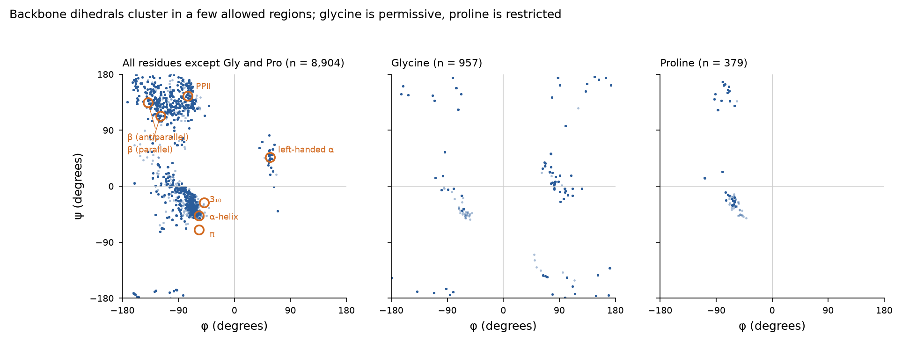
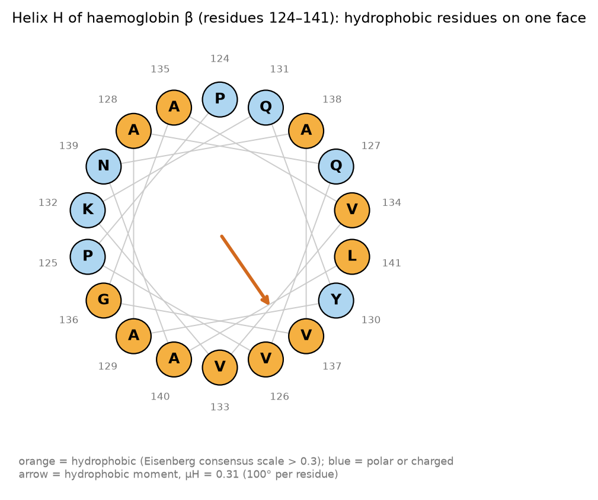
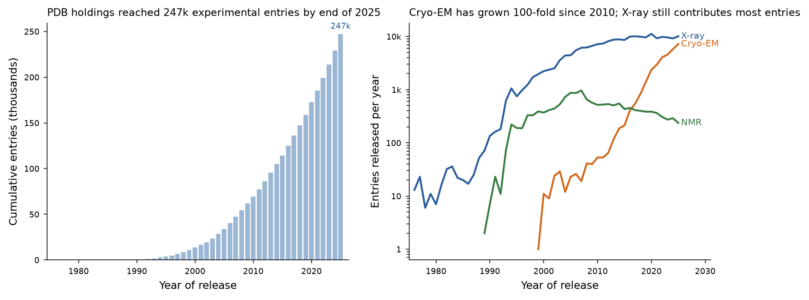
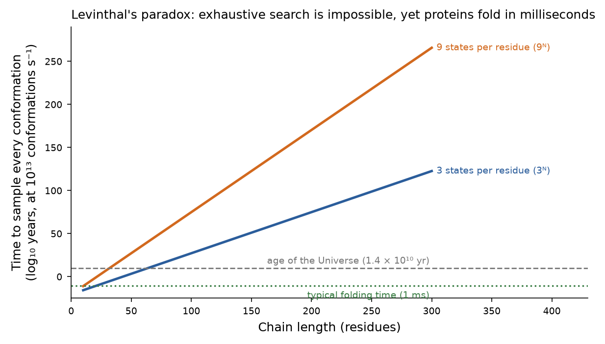
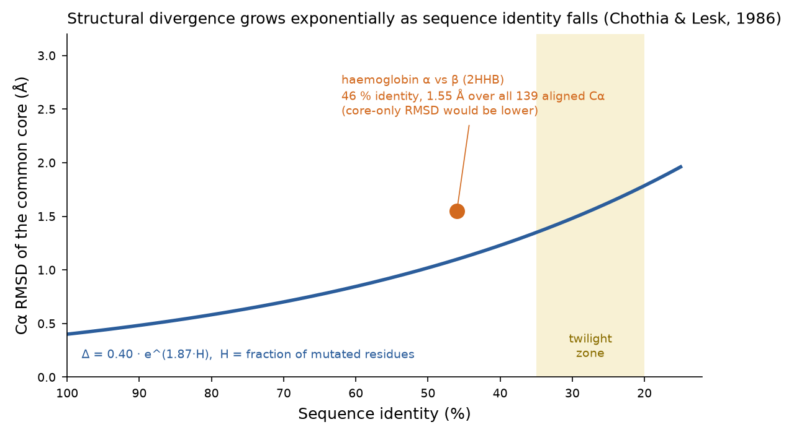
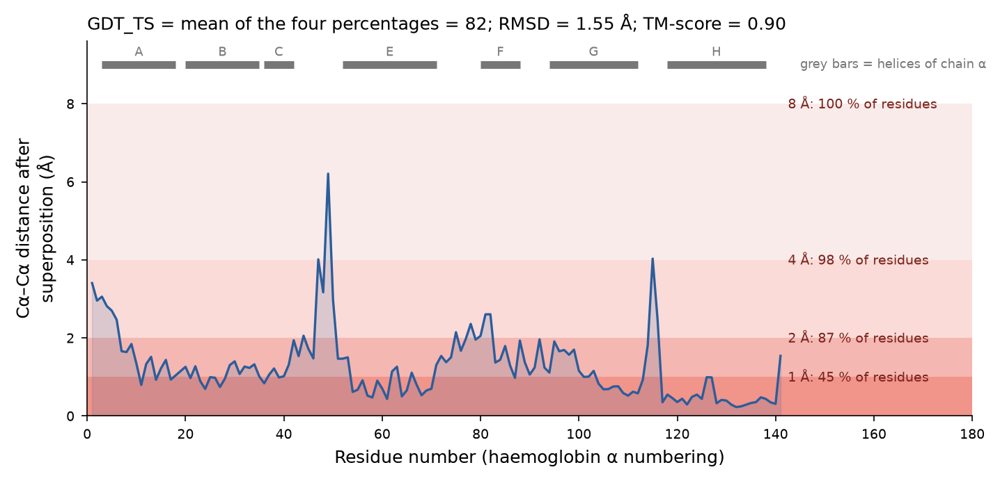
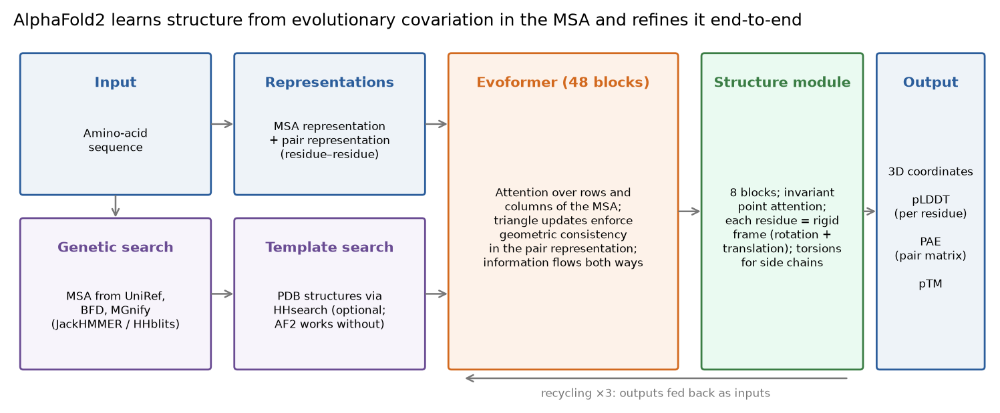

Este documento amplía la segunda clase del módulo. La Unidad 1 terminó con la observación de que la similitud de secuencia implica similitud estructural; esta unidad explica qué significa "estructura" en cada nivel de organización, cómo se determinan experimentalmente y se almacenan las estructuras, por qué predecirlas a partir de la secuencia fue durante cincuenta años uno de los problemas centrales sin resolver de la biología molecular, y cómo se abordó el problema: primero tomando prestadas las estructuras de homólogos, luego mediante la física y, desde 2020, mediante aprendizaje profundo (deep learning). Cada afirmación cuantitativa está citada a la literatura primaria o bien se calculó en este documento a partir de entradas reales del Protein Data Bank (2HHB, desoxihemoglobina humana; 6ZJA, ureasa de Helicobacter pylori; 1UBQ, ubiquitina), de modo que ustedes puedan reproducirla.
Objetivos de aprendizaje
- Describir la química de los veinte aminoácidos que es relevante para la estructura: clases de cadenas laterales, grupos ionizables y sus valores de pKa, quiralidad.
- Explicar la geometría del enlace peptídico y definir los ángulos diedros φ, ψ y ω; leer un gráfico de Ramachandran.
- Indicar los parámetros que definen la hélice α, las hélices 310 y π y las láminas β; explicar qué residuos favorecen o desestabilizan cada una, y por qué los loops son importantes desde el punto de vista funcional.
- Describir los cuatro niveles de la estructura de proteínas y las principales clases de plegamiento utilizadas por SCOP y CATH.
- Comparar la cristalografía de rayos X, la RMN y la criomicroscopía electrónica (cryo-EM); interpretar la resolución, los factores R y los factores B; leer un archivo PDB/mmCIF.
- Enunciar la hipótesis de Anfinsen y la paradoja de Levinthal, y explicar cómo la visión del paisaje energético las reconcilia.
- Describir el flujo de trabajo del modelado por homología y la exactitud esperada en cada nivel de identidad de secuencia; distinguirlo del threading y de los métodos ab initio.
- Calcular e interpretar RMSD, GDT_TS, TM-score y lDDT; validar un modelo con criterios estereoquímicos y basados en conocimiento.
- Explicar el vocabulario básico del aprendizaje automático y del aprendizaje profundo, la arquitectura de AlphaFold2 y el significado de pLDDT y PAE, e indicar qué es lo que AlphaFold no predice.
Sección 1El laboratorio in silico
La clase comienza con un diagrama que vale la pena tener presente durante todo el módulo. Un sistema fuente —una proteína en una célula, un fármaco en un sitio de unión— se observa en el laboratorio experimental y, en paralelo, se abstrae en un modelo conceptual: un conjunto de supuestos sobre qué entidades e interacciones son relevantes. El modelo conceptual se implementa como un modelo de simulación (un campo de fuerza, una función de puntuación, una red neuronal) cuyos resultados se comparan con los resultados experimentales. Cuando ambos concuerdan, el modelo se gana el derecho a ser usado de forma predictiva, para condiciones que aún no se han medido; cuando discrepan, la discrepancia apunta al supuesto que era erróneo. La biología estructural computacional es la disciplina que construye tales modelos para moléculas, y sus dos caras —descriptiva (explicar una estructura o un modo de unión medidos) y predictiva (proponer una estructura, un ligando o una mutación antes de que se fabrique)— son igualmente importantes.
El laboratorio in silico tiene la misma estructura de entradas y salidas que un experimento de laboratorio húmedo. Las entradas son condiciones iniciales (secuencia, coordenadas, temperatura, presión, concentración, estados de protonación); las salidas son observables (energías libres, constantes cinéticas, poblaciones conformacionales, poses de unión). Lo que difiere es la estructura de costos: una simulación es barata de repetir y permite controlar cada variable, pero cada aproximación hecha en el modelo se propaga a sus predicciones. Los métodos que cubre este módulo forman una escalera de detalle físico y costo crecientes —comparación de secuencias, predicción de estructura, docking molecular, cálculos de mecánica cuántica, dinámica molecular y simulaciones de energía libre— y el arte consiste en elegir el peldaño más barato que responda la pregunta. El descubrimiento de fármacos usa esta escalera como un embudo: millones de moléculas se criban con métodos rápidos y aproximados, y solo las pocas que sobreviven se tratan con métodos costosos y exactos.
Por qué la estructura es el eje del módulo
Todos los métodos posteriores a esta clase requieren coordenadas tridimensionales. El docking ubica un ligando en un bolsillo; el diseño de fármacos modifica un ligando en ese bolsillo; la dinámica molecular mueve cada átomo del complejo a lo largo del tiempo. Si no existe una estructura experimental para el blanco —lo que todavía ocurre para la mayoría de las proteínas humanas en la mayoría de sus estados conformacionales—, las coordenadas deben predecirse, y la calidad de todo lo que viene después está acotada por la calidad de esa predicción. Por lo tanto, esta clase trata sobre de dónde provienen las coordenadas, qué tan buenas son y cómo saberlo.
Sección 2Aminoácidos: la química que determina la estructura
Las proteínas son polímeros lineales de veinte α-aminoácidos. Cada uno tiene un carbono α unido a un grupo amino, un grupo carboxilo, un hidrógeno y una cadena lateral (grupo R) que lo distingue. Excepto en la glicina (R = H), el carbono α es un estereocentro y todos los aminoácidos incorporados por el ribosoma tienen configuración L (S en la nomenclatura de Cahn–Ingold–Prelog, excepto la cisteína, que es R porque el azufre tiene mayor prioridad que el carbono del carboxilo). Esta quiralidad única es la razón por la que las estructuras secundarias de las proteínas tienen una lateralidad: una hélice α dextrógira construida con L-aminoácidos es energéticamente favorable; su imagen especular no lo es.
La clase plantea si es necesario aprender las estructuras de los veinte aminoácidos. La respuesta para este módulo es sí, en un sentido específico: no los dibujos por sí mismos, sino las propiedades que deciden dónde se ubica un residuo en un plegamiento y cómo interactúa con un ligando. La tabla agrupa los residuos según esas propiedades.
| Clase | Residuos (códigos de tres letras y de una letra) | Rol estructural |
|---|---|---|
| Hidrofóbicos alifáticos | Ala A · Val V · Leu L · Ile I · Met M | Empaquetamiento del núcleo; V, I favorecen las hebras β; A, L, M favorecen las hélices |
| Aromáticos | Phe F · Tyr Y · Trp W | Empaquetamiento del núcleo y de interfaces; apilamiento π e interacciones catión–π con ligandos; W e Y frecuentemente en interfaces de membrana |
| Pequeños / especiales | Gly G · Pro P · Cys C | G: sin cadena lateral, flexible, conformaciones levógiras; P: su cadena lateral cíclica fija φ ≈ −63°, sin N–H, rompe hélices; C: puentes disulfuro, unión de metales |
| Polares sin carga | Ser S · Thr T · Asn N · Gln Q | Superficie, puentes de hidrógeno; N y G frecuentes en giros; los hidroxilos de S/T sellan (capping) los extremos de las hélices |
| Ácidos (negativos a pH 7) | Asp D · Glu E | Carga superficial, puentes salinos, coordinación de metales, catálisis |
| Básicos (positivos a pH 7) | Lys K · Arg R · His H | Carga superficial, unión de fosfatos/ácidos nucleicos; H es el único residuo que se titula cerca de pH 7 y, por lo tanto, es el ácido/base catalítico habitual |
Estados de protonación
La carga de una proteína no es fija: depende del pH y del microambiente de cada grupo ionizable. La tabla lista los valores de pKa de los aminoácidos libres. En una proteína plegada, estos valores se desplazan —un aspartato enterrado puede tener pKa 7 o superior, una histidina junto a una carga positiva puede tener pKa 5— y asignar correctamente los estados de protonación es una de las primeras decisiones al preparar una estructura para docking o dinámica molecular (herramientas como PROPKA o H++ estiman estos desplazamientos).
| Grupo | pKa (aminoácido libre) | Estado predominante a pH 7.4 |
|---|---|---|
| α-carboxilo C-terminal | ≈ 2.3 | –COO− |
| Cadena lateral de Asp | 3.65 | –COO− |
| Cadena lateral de Glu | 4.25 | –COO− |
| Cadena lateral de His (imidazol) | 6.00 | Mayoritariamente neutra; ~4 % protonada — se desplaza fácilmente en cualquier dirección |
| Cadena lateral de Cys (tiol) | 8.18 | Mayoritariamente –SH; tiolato en algunos sitios activos |
| α-amino N-terminal | ≈ 9.6 | –NH3+ |
| Cadena lateral de Tyr (fenol) | 10.07 | Neutra |
| Cadena lateral de Lys | 10.53 | –NH3+ |
| Cadena lateral de Arg (guanidinio) | 12.48 | Positiva, siempre |
La regla abreviada de la clase —los ácidos D y E desprotonados alrededor de pH 4, las bases K y R protonadas hasta pH 10–12, la histidina como caso especial cerca de pH 6–7— es el patrón que deben recordar. Valores tomados de Nelson & Cox, Lehninger Principles of Biochemistry.[40]
Puntos clave — Sección 2
- Todos los aminoácidos proteicos, excepto la glicina, son quirales y L; esto fija la lateralidad de las hélices y las láminas.
- Las cadenas laterales se agrupan en clases hidrofóbicas, aromáticas, especiales, polares, ácidas y básicas; la partición hidrofóbico/polar impulsa el plegamiento.
- Solo la histidina se titula cerca del pH fisiológico; los estados de protonación de D, E, H, K y C en un sitio de unión deben asignarse explícitamente antes de cualquier simulación.
Sección 3La jerarquía de la estructura de proteínas
Los cuatro niveles de Linderstrøm-Lang siguen siendo el vocabulario del área. La estructura primaria es la secuencia covalente de residuos (y los enlaces disulfuro). La estructura secundaria es la conformación local y regular del esqueleto (backbone) —hélices y hebras— estabilizada por puentes de hidrógeno del esqueleto. La estructura terciaria es la disposición tridimensional de todos los átomos de una cadena, incluido el empaquetamiento de los elementos de estructura secundaria y la conformación de los loops. La estructura cuaternaria es el ensamblaje de dos o más cadenas en un complejo. Cada nivel restringe al siguiente, pero no lo determina de manera única, y por eso la predicción de estructura es difícil.
3.1 Estructura primaria y el enlace peptídico
Dos aminoácidos se unen mediante una reacción de condensación en la que el carbono del carboxilo de uno ataca al nitrógeno del amino del siguiente, liberando agua y formando el enlace amida (peptídico) C′–N. El ribosoma cataliza esta reacción; en el laboratorio se requiere la activación del grupo carboxilo. El polímero resultante tiene un esqueleto repetitivo (N–Cα–C′) con un grupo amino libre en el extremo N-terminal y un carboxilo libre en el extremo C-terminal; las secuencias se escriben N → C.
El enlace peptídico no es un enlace simple ordinario. El par solitario del nitrógeno se deslocaliza hacia el carbonilo, de modo que el enlace C′–N tiene alrededor de 40 % de carácter de doble enlace: es más corto (1.33 Å) que un enlace simple C–N (1.45 Å) y más largo que un doble enlace C=N (1.27 Å). Por lo tanto, los seis átomos Cαi, C′i, Oi, Ni+1, Hi+1, Cαi+1 son coplanares, y la rotación en torno a C′–N está restringida a dos estados: trans (ω ≈ 180°), en el que los carbonos α sucesivos quedan en lados opuestos del enlace, y cis (ω ≈ 0°), que está desfavorecido por el choque estérico entre las cadenas laterales y ocurre en alrededor de 0.03 % de los enlaces peptídicos que no involucran prolina y en alrededor de 5 % de los enlaces X–Pro. La rigidez del plano peptídico es lo que reduce la libertad conformacional del esqueleto a dos ángulos por residuo —el tema de la siguiente sección— y lo que le da al esqueleto los grupos regulares formadores de puentes de hidrógeno (C=O aceptor, N–H donor) de los que depende la estructura secundaria.
3.2 Ángulos diedros del esqueleto y el gráfico de Ramachandran
Con ω fijo, la conformación del esqueleto en el residuo i se describe mediante dos ángulos diedros (de torsión):
- φ (phi): rotación en torno al enlace N–Cα, definida por los átomos C′i−1–Ni–Cαi–C′i.
- ψ (psi): rotación en torno al enlace Cα–C′, definida por Ni–Cαi–C′i–Ni+1.
- ω (omega): rotación en torno al enlace peptídico, Cαi–C′i–Ni+1–Cαi+1; ≈ 180° (trans).
Un ángulo diedro es el ángulo entre dos planos: mirando a lo largo del enlace central, es la rotación necesaria para llevar el primer átomo sobre el cuarto; por convención va de −180° a +180°, y es positivo para la rotación en sentido horario. En 1963, Ramachandran, Ramakrishnan y Sasisekharan calcularon, solo a partir de radios atómicos de esferas rígidas, qué pares (φ, ψ) están libres de choques estéricos, y encontraron que la mayor parte del plano está prohibida.[3] Las estructuras experimentales confirman la predicción (Figura 1).

2HHB hemoglobina, 6ZJA ureasa, 1UBQ ubiquitina; 10,240 residuos con φ y ψ definidos; Biopython). Izquierda: todos los residuos excepto glicina y prolina ocupan dos regiones principales —la región β (arriba a la izquierda, φ ≈ −120°, ψ ≈ +130°) y la región α dextrógira (abajo a la izquierda, φ ≈ −60°, ψ ≈ −45°)— además de una región α levógira escasamente poblada (arriba a la derecha). Los círculos naranjos marcan los valores canónicos de las estructuras secundarias discutidas en la Sección 3.3. Centro: la glicina, al no tener cadena lateral, es simétrica respecto del origen y puebla regiones prohibidas para los demás residuos. Derecha: el anillo de la prolina fija φ cerca de −65°, confinándola a dos grupos estrechos (α y poliprolina/β). En 2HHB, una proteína toda-α, el 82 % de los residuos que no son Gly/Pro cae en la región helicoidal; en 1UBQ, el 62 % cae en la región β.El gráfico de Ramachandran es también el primer control de calidad que se aplica a cualquier modelo o estructura experimental: un residuo en una región no permitida es o bien un error o bien un residuo funcionalmente tensionado que merece atención (los residuos catalíticos están sobrerrepresentados entre los valores atípicos genuinos). Los programas de validación informan el porcentaje de residuos en regiones favorecidas, permitidas y atípicas (outliers); una estructura de alta resolución bien refinada tiene > 98 % de residuos favorecidos y < 0.2 % de atípicos.[22]
3.3 Estructura secundaria
Las estructuras secundarias son las conformaciones regulares en las que residuos consecutivos adoptan los mismos (φ, ψ) y los grupos N–H y C=O del esqueleto forman puentes de hidrógeno repetitivos. Su existencia fue predicha por Pauling, Corey y Branson en 1951 a partir de la planaridad del enlace peptídico y la geometría del puente de hidrógeno, antes de que se hubiera resuelto la estructura de alguna proteína.[1],[2] El puente de hidrógeno en sí —un donor X–H (N–H, O–H) que apunta hacia el par solitario de un aceptor Y (O, N)— es direccional y de corto alcance: distancias entre átomos pesados de 2.7–3.1 Å y ángulos X–H···Y superiores a ~150° producen los enlaces más fuertes, y la energía cae rápidamente a medida que la geometría se degrada. Las estructuras secundarias son la solución del esqueleto para satisfacer estos puentes de hidrógeno en el interior hidrofóbico, donde el agua no puede hacerlo.
| Elemento | Residuos / vuelta | Avance / residuo | Paso | Puente de H | φ, ψ (típicos) | Notas |
|---|---|---|---|---|---|---|
| Hélice α | 3.6 | 1.5 Å | 5.4 Å | C=O(i) ··· H–N(i+4) | −57°, −47° | Dextrógira; la más abundante (~30 % de los residuos); longitud media de 10–12 residuos (~3 vueltas), rango 5–40 |
| Hélice 310 | 3.0 | 2.0 Å | 6.0 Å | C=O(i) ··· H–N(i+3) | −49°, −26° | Más apretada y menos estable; habitualmente 1 vuelta en el extremo C-terminal de las hélices α |
| Hélice π | 4.4 | 1.15 Å | 5.0 Å | C=O(i) ··· H–N(i+5) | −57°, −70° | Más ancha; rara como elemento regular, pero se presentan protuberancias π (π-bulges) cortas en ~15 % de las proteínas, a menudo en sitios funcionales |
| Hebra β (lámina antiparalela) | 2.0 | 3.4 Å | — | Entre hebras; alternan pares estrechos y anchos | −139°, +135° | Las cadenas laterales alternan por encima y por debajo de la lámina; hebras adyacentes conectadas por horquillas |
| Hebra β (lámina paralela) | 2.0 | 3.2 Å | — | Entre hebras; espaciados uniformemente, menos lineales | −119°, +113° | Requiere conexiones cruzadas (habitualmente β–α–β dextrógiras); típica de los plegamientos α/β |
El nombre "310" codifica 3 residuos por vuelta y 10 átomos en el anillo cerrado por el puente de hidrógeno; en la misma notación, la hélice α es 3.613 y la hélice π 4.416. La cifra de 3.7 residuos por vuelta para la hélice α que aparece en la clase es un redondeo de 3.6; el paso de 5.4 Å resulta de 3.6 × 1.5 Å.
La hélice α
En la hélice α, cada N–H y C=O del esqueleto (excepto los primeros cuatro N–H y los últimos cuatro C=O) forma un puente de hidrógeno, todos los puentes de hidrógeno apuntan a lo largo del eje y las cadenas laterales se proyectan hacia afuera y levemente hacia el extremo N-terminal. Como la hélice suele estar empaquetada contra el núcleo de la proteína por un lado y expuesta al solvente por el otro, la secuencia muestra una periodicidad de aproximadamente 3.6: los residuos hidrofóbicos se repiten en las posiciones i, i+3, i+4, i+7 —"cada tres o cuatro residuos", como lo expresa la clase— de modo que quedan en una misma cara. Una rueda helicoidal (Figura 2) lo hace visible al graficar los residuos alrededor de un círculo a intervalos de 100°, y el momento hidrofóbico lo cuantifica como la suma vectorial de las hidrofobicidades de los residuos.[41] La periodicidad anfipática es detectable a partir de la secuencia sola y es una de las señales que usan los predictores de estructura secundaria.

Los residuos difieren en su propensión helicoidal. La alanina, la leucina, el glutamato, la metionina, la glutamina, la lisina y la arginina favorecen las hélices; la glicina (demasiado flexible: paga un gran costo entrópico al quedar fija) y la prolina (su anillo prohíbe el ángulo φ de la hélice α y no tiene N–H para donar el puente de hidrógeno en la posición i+4) las desfavorecen o las terminan. No obstante, la prolina es común en la primera vuelta de una hélice, donde su N–H no es necesario, y en las hélices de membrana, donde introduce quiebres funcionalmente importantes. Los residuos ramificados en β (V, I, T) y los aromáticos (Y, F, W) favorecen las hebras, donde sus cadenas laterales voluminosas tienen espacio para alternar por encima y por debajo de la lámina. Pace y Scholtz midieron una escala termodinámica: la alanina cuesta 0 kcal mol−1, la glicina ~1 y la prolina > 3 en relación con la alanina.[42]
Láminas β
Una hebra β es una conformación extendida (casi completamente estirada; avance de 3.2–3.4 Å por residuo) que es inestable por sí sola porque sus grupos formadores de puentes de hidrógeno apuntan hacia los lados; solo se estabiliza cuando se aparea con hebras vecinas para formar una lámina. Las hebras pueden correr en la misma dirección (paralelas), en direcciones opuestas (antiparalelas) o en una disposición mixta. Las dos topologías tienen patrones de puentes de hidrógeno distintos —las láminas antiparalelas tienen pares de enlaces entre los mismos dos residuos que alternan entre muy cercanos y ampliamente espaciados; las láminas paralelas tienen enlaces espaciados uniformemente hacia dos residuos diferentes— y conexiones distintas: las vecinas antiparalelas pueden unirse mediante una horquilla β (β-hairpin) cerrada, mientras que las vecinas paralelas requieren una conexión cruzada más larga, casi siempre una unidad β–α–β dextrógira. Las láminas no son planas: presentan una torsión dextrógira (vistas a lo largo de las hebras), típicamente de 0–30° entre hebras adyacentes, lo que les permite empaquetarse contra hélices y enrollarse formando barriles. Las cadenas laterales alternan por encima y por debajo de la lámina, de modo que una hebra con el patrón polar–hidrofóbico–polar–hidrofóbico forma una cara enterrada y una expuesta. Como los residuos de las hebras ocupan una región amplia del gráfico de Ramachandran y sus pares pueden estar distantes en la secuencia, la estructura β es más difícil de predecir a partir de la secuencia que las hélices, un punto que señala la clase y que siguió siendo cierto para los predictores hasta la era del aprendizaje profundo.
Loops, giros y coil
Las hélices y las hebras dan cuenta de aproximadamente la mitad de los residuos de una proteína globular típica. El resto forma loops —segmentos de conformación irregular que conectan elementos de estructura secundaria y se ubican principalmente en la superficie— y giros (turns), loops cortos de dos a cuatro residuos que invierten la dirección de la cadena (los giros β, con un puente de hidrógeno entre los residuos i e i+3, son los más comunes; la glicina, la asparagina, el aspartato y la prolina están sobrerrepresentados en ellos). El término coil (o "ovillo aleatorio", random coil) denota residuos no asignados a ninguna estructura regular; no son aleatorios, solo irregulares, y el mismo loop suele adoptar la misma conformación en cada copia de la proteína. Los loops están enriquecidos en residuos polares y cargados, suelen ser las regiones más variables entre homólogos —las inserciones y deleciones en los alineamientos casi siempre caen en loops— y son componentes frecuentes de los sitios activos, precisamente porque su flexibilidad les permite cerrarse sobre un sustrato. El ejemplo de la clase es el flap de la ureasa, un loop móvil que cubre el sitio activo que contiene níquel y cuyas conformaciones abierta y cerrada determinan el acceso del sustrato y de los inhibidores. Para quien modela, los loops son a la vez la parte de una estructura que se predice con menor confiabilidad y, a menudo, la parte más importante para la unión de ligandos.
En una estructura experimental, la estructura secundaria se asigna algorítmicamente a partir del patrón de puentes de hidrógeno; el programa estándar es DSSP (Kabsch y Sander, 1983), cuyo código de ocho estados (H, G, I para las hélices α, 310 y π; E y B para hebras y puentes; T, S para giros y curvaturas; espacio en blanco para coil) es lo que los visualizadores moleculares muestran como representación de cintas (cartoon).[4]
3.4 Estructura terciaria y cuaternaria; clases de plegamiento
La estructura terciaria es la disposición en el espacio de todos los átomos de una cadena. Se mantiene unida principalmente por el efecto hidrofóbico —el enterramiento de las cadenas laterales no polares lejos del agua, que es entrópicamente favorable porque libera agua ordenada— y, en segundo lugar, por puentes de hidrógeno, puentes salinos, empaquetamiento de van der Waals (el interior de una proteína está tan densamente empaquetado como un cristal de moléculas orgánicas pequeñas) y, en las proteínas extracelulares, enlaces disulfuro. La mayoría de las cadenas de más de ~200 residuos se pliegan en dos o más dominios: unidades compactas que se pliegan de forma independiente y que constituyen el nivel natural en el que la evolución recombina proteínas (Unidad 1, Sección 6) y en el que se clasifica la estructura. El número de plegamientos (folds) distintos (disposiciones y conectividades de los elementos de estructura secundaria) es limitado —del orden de 1,500 en SCOP y CATH— porque la física permite solo un número acotado de formas de empaquetar hélices y láminas, y porque la evolución las reutiliza.
La clasificación SCOP (Murzin, Brenner, Hubbard, Chothia, 1995) agrupa los dominios jerárquicamente en clase, plegamiento, superfamilia (ancestría común probable) y familia (ancestría común clara); CATH (Orengo et al., 1997) usa Clase, Arquitectura, Topología y superfamilia Homóloga.[5],[6] Ambas comienzan con las clases enumeradas en la clase:
| Clase | Descripción | Ejemplo de la clase |
|---|---|---|
| Toda-α | Haces o arreglos de hélices α conectadas por loops | Hemoglobina / plegamiento de globina (8 hélices A–H alrededor de un hemo) |
| Toda-β | Láminas β antiparalelas, habitualmente dos empaquetadas cara a cara (sándwich) o enrolladas en un barril | CD8 (plegamiento de inmunoglobulina) |
| α/β | Principalmente láminas β paralelas con hélices entre las hebras (unidades β–α–β); incluye el barril TIM y el plegamiento de Rossmann | Subunidad α de la triptófano sintasa (barril TIM) |
| α+β | Regiones α y β antiparalelas segregadas | Ribonucleasa A |
| Multidominio | Varios dominios de distintas clases en una sola cadena | La mayoría de las enzimas grandes y de las proteínas de señalización |
| De membrana y de superficie celular | Haces helicoidales transmembrana o barriles β; exterior hidrofóbico | Canal de potasio K2P |
La estructura cuaternaria es la asociación de cadenas (subunidades) en un oligómero. La hemoglobina es el ejemplo clásico: dos cadenas α y dos β, cada una con un plegamiento de globina, se ensamblan en un tetrámero α2β2 cuyas interfaces transmiten la transición cooperativa entre los estados T (desoxi) y R (oxi). Muchas enzimas son homo-oligómeros; la ureasa de la clase (6ZJA) es un trímero de trímeros (αβ)3 —24 cadenas y casi 78,000 átomos en el modelo depositado. La estructura cuaternaria no puede inferirse a partir de la secuencia de una sola cadena, y es un área en la que la predicción de estructura se volvió confiable solo con AlphaFold-Multimer y AlphaFold 3 (Sección 10).
Puntos clave — Sección 3
- El enlace peptídico plano y trans deja dos torsiones por residuo, φ y ψ; los impedimentos estéricos las restringen a las regiones permitidas del gráfico de Ramachandran, con la glicina y la prolina como excepciones.
- Hélice α: 3.6 residuos/vuelta, paso de 5.4 Å, puentes de hidrógeno i→i+4, dextrógira, periodicidad anfipática ~3.6. Láminas β: paralelas o antiparalelas, torcidas, con cadenas laterales alternadas, difíciles de predecir.
- Los loops son irregulares pero no aleatorios; concentran la mayoría de las inserciones/deleciones y muchos residuos de sitios activos.
- La estructura terciaria es impulsada por el enterramiento hidrofóbico; los plegamientos son limitados en número y se clasifican en las clases toda-α, toda-β, α/β, α+β, multidominio y de membrana.
Sección 4Estructuras experimentales y el Protein Data Bank
4.1 Métodos
Tres técnicas producen casi todas las estructuras de resolución atómica del PDB. La tabla comparativa de la clase se amplía a continuación.
| Cristalografía de rayos X | Espectroscopía de RMN | Criomicroscopía electrónica | |
|---|---|---|---|
| Principio | Difracción de rayos X por los electrones de un cristal; el mapa de densidad electrónica se interpreta con un modelo atómico | Desplazamientos químicos, acoplamientos y efectos Overhauser nucleares (distancias NOE) entre núcleos 1H, 13C, 15N en solución; la estructura se calcula a partir de restricciones de distancia y de ángulo | Las imágenes de miles de partículas congeladas y orientadas al azar se alinean y promedian para reconstruir un mapa 3D de potencial de Coulomb |
| Muestra | Cristales bien ordenados (a menudo el cuello de botella); cualquier tamaño | Proteína soluble y estable a ~0.5 mM, marcada isotópicamente; práctica hasta ~40–50 kDa | Solución diluida vitrificada sobre una rejilla; funciona mejor por encima de ~100–150 kDa; sin cristales |
| Resultado | Un solo modelo (estático, promedio sobre el cristal); los factores B informan el desorden; los contactos cristalinos pueden distorsionar los loops de superficie | Conjunto (ensemble) de 10–20 modelos consistentes con las restricciones; información directa sobre la dinámica (relajación) y sobre las regiones desordenadas | Un solo modelo o varias clases conformacionales a partir del mismo conjunto de datos; estado similar al nativo; proteínas de membrana en nanodiscos |
| Resolución | Típicamente 1.5–2.5 Å; la mejor < 1 Å | No se define como tal; la precisión se expresa como el RMSD del conjunto (~0.5–1 Å para el esqueleto) | Típicamente 2.5–4 Å; rutinariamente < 3 Å desde 2015, resolución atómica (1.2 Å) demostrada en 2020[9] |
| Fracción del PDB (todos los años) | ≈ 80 % | ≈ 6 % | ≈ 14 % y la de crecimiento más rápido (Figura 3) |
Conviene hacer dos precisiones a la tabla de la clase. Primero, la cryo-EM ya no es de "resolución relativamente baja": la estructura de la ureasa usada a lo largo de este documento (6ZJA) es un mapa de cryo-EM a 2.0 Å en el que se resuelven el inhibidor y las moléculas de agua, y el Premio Nobel de Química 2017 (Dubochet, Frank, Henderson) reconoció la "revolución de la resolución" producida por los detectores directos de electrones. Segundo, los métodos son complementarios más que competidores: la cristalografía sigue aportando la mayoría de las estructuras con ligando unido para el diseño de fármacos, la RMN es el método de elección para proteínas pequeñas, la dinámica y las regiones intrínsecamente desordenadas, y la cryo-EM ha abierto el acceso a grandes complejos y a proteínas de membrana que resistieron la cristalización durante décadas.
4.2 El Protein Data Bank
El Protein Data Bank se fundó en 1971 en el Brookhaven National Laboratory con siete estructuras; es el recurso digital de acceso abierto más antiguo de la biología. Desde 2003 es administrado por el consorcio Worldwide PDB (wwPDB) —RCSB PDB en Estados Unidos, PDBe en el EMBL-EBI, PDBj en Japón y el BMRB para datos de RMN—, que mantiene un único archivo con contenido idéntico servido a través de varios portales.[7],[8] El depósito es obligatorio para publicar en prácticamente todas las revistas, cada entrada se valida según estándares de la comunidad antes de ser liberada, y cada entrada se identifica mediante un código de cuatro caracteres (2HHB; se están introduciendo códigos extendidos de ocho caracteres, pdb_00002hhb, a medida que el espacio de cuatro caracteres se acerca a su agotamiento).

El PDB es el fundamento empírico de todo lo que se trata en esta unidad: el modelado por homología toma prestadas sus coordenadas, las bibliotecas de threading se construyen a partir de él, los potenciales basados en conocimiento se derivan de sus estadísticas y AlphaFold fue entrenado con él. Su tamaño —un cuarto de millón de entradas— debe compararse con las ~250 millones de secuencias de UniProtKB: la brecha secuencia–estructura es de tres órdenes de magnitud, y el número de proteínas distintas con estructura es mucho menor que el número de entradas, porque las proteínas populares (lisozima, tripsina, proteasa del VIH, quinasas) se han resuelto cientos de veces. Esta brecha es la razón de ser de la predicción de estructura.
Junto al PDB, en la clase se mostraron varios recursos derivados. SCOP y CATH clasifican los dominios del PDB en plegamientos y superfamilias (Sección 3.4). UniProtKB/Swiss-Prot vincula cada secuencia con sus estructuras y con la predicción de AlphaFold. PIR (Protein Information Resource), descendiente del Atlas de Dayhoff (Unidad 1), es socio de UniProt. La base de datos PDB-REDO vuelve a refinar cada estructura cristalina con métodos actuales, y PDBe-KB agrega anotaciones funcionales sobre las estructuras.
4.3 Anatomía de una entrada del PDB
Cada entrada contiene coordenadas, metadatos experimentales y, para cristalografía y cryo-EM, los datos experimentales (factores de estructura o mapas). El formato PDB heredado es un archivo de texto de columnas fijas; el ejemplo de la clase, la entrada de la ureasa de H. pylori 6ZJA, comienza de la siguiente manera (líneas de encabezado seleccionadas):
HEADER HYDROLASE 28-JUN-20 6ZJA
TITLE HELICOBACTER PYLORI UREASE WITH INHIBITOR BOUND IN THE ACTIVE SITE
EXPDTA ELECTRON MICROSCOPY
REMARK 2 RESOLUTION. 2.00 ANGSTROMS.
ATOM 1 N MET A 1 181.656 253.941 175.116 1.00 4.96 N
ATOM 2 CA MET A 1 182.478 253.982 173.914 1.00 4.96 C
ATOM 3 C MET A 1 182.658 252.599 173.289 1.00 4.96 C
ATOM 4 O MET A 1 182.713 252.482 172.066 1.00 4.96 O
ATOM 5 CB MET A 1 183.845 254.589 174.225 1.00 4.96 C
...El registro ATOM es el corazón del archivo y vale la pena memorizar sus columnas, porque todas las herramientas de este módulo las leen:
| Columnas | Campo | Ejemplo (primera línea anterior) | Significado |
|---|---|---|---|
| 1–6 | Nombre del registro | ATOM | ATOM para átomos del polímero; HETATM para ligandos, iones, agua, cofactores |
| 7–11 | Número de serie | 1 | Índice secuencial del átomo |
| 13–16 | Nombre del átomo | N | Esqueleto: N, CA, C, O; cadena lateral: CB, CG, CD1 … según la nomenclatura IUPAC |
| 17 | Ubicación alternativa | (en blanco) | A, B … cuando un átomo se modeló en dos conformaciones |
| 18–20 | Nombre del residuo | MET | Código de tres letras; HEM, HOH, etc. para grupos hetero |
| 22 | Identificador de cadena | A | Una letra por cadena; 24 cadenas en 6ZJA |
| 23–26 | Número de secuencia del residuo | 1 | Numeración del autor: puede comenzar en cualquier número, saltarse números o llevar códigos de inserción (columna 27); en la práctica, la fuente de la mayoría de las inconsistencias de numeración |
| 31–54 | x, y, z | 181.656 253.941 175.116 | Coordenadas ortogonales en Å |
| 55–60 | Ocupancia | 1.00 | Fracción de moléculas en las que el átomo está en esta posición; < 1 para conformaciones alternativas o ligandos parcialmente unidos |
| 61–66 | Factor de temperatura (factor B) | 4.96 | B = 8π²⟨u²⟩, en Ų; mide la incertidumbre/movilidad posicional. Bajo en el núcleo, alto en los loops de superficie; > 60–80 Ų significa que el átomo está mal definido |
| 77–78 | Elemento | N | Símbolo del elemento |
Los grupos hetero siguen el mismo formato; en la hemoglobina 2HHB, el hemo de la cadena A aparece como registros HETATM con nombre de residuo HEM:
HETATM 4389 CHA HEM A 142 18.719 18.625 20.410 1.00 17.24 C
HETATM 4390 CHB HEM A 142 21.047 20.711 24.157 1.00 23.17 COtros registros importantes son HEADER (clasificación y fecha de depósito), TITLE, COMPND y SOURCE (molécula y organismo), EXPDTA (método), REMARK 2 (resolución), REMARK 3 (estadísticas de refinamiento: R-work, R-free), REMARK 465 (residuos presentes en la secuencia pero ausentes del modelo: regiones desordenadas, que todo modelador debe revisar), SEQRES (la secuencia completa de cada cadena, que puede diferir de los residuos efectivamente observados), HELIX/SHEET (estructura secundaria asignada por los autores), SSBOND y LINK (conexiones covalentes) y CRYST1 (celda unitaria y grupo espacial).
Desde 2014, el formato maestro del archivo es PDBx/mmCIF, un formato de diccionario etiqueta–valor sin límites de columnas. El formato heredado no puede representar más de 62 cadenas ni más de 99,999 átomos, por lo que las entradas muy grandes (ribosomas, cápsides virales) existen solo en mmCIF, y las herramientas nuevas deberían leer mmCIF por defecto (6ZJA.cif). El contenido es el mismo; la categoría atom_site contiene los campos del registro ATOM bajo nombres explícitos (Cartn_x, B_iso_or_equiv, label_asym_id, …), incluidas tanto las etiquetas de cadena y residuo del autor como un conjunto canónico asignado por el PDB.
4.4 Cómo juzgar una estructura experimental
Una estructura experimental es en sí misma un modelo ajustado a datos, y los metadatos indican qué tan bien lo está. Para las estructuras cristalinas, los números clave son:
- Resolución (Å): el menor espaciado al que se midieron datos de difracción; cuanto menor, mejor. Por debajo de ~1.2 Å se resuelven átomos individuales y los hidrógenos pueden ser visibles; entre 1.5–2.5 Å las cadenas laterales están bien definidas y se modelan las aguas; entre 2.5–3.5 Å el esqueleto es confiable, pero los rotámeros de las cadenas laterales y las orientaciones de los ligandos pueden ser ambiguos; por encima de 4 Å solo el plegamiento es confiable. Para docking, prefieran ≤ 2.5 Å con el ligando claramente dentro de la densidad.
- R-work y R-free: la discrepancia entre las amplitudes de los factores de estructura observados y calculados, para las reflexiones usadas en el refinamiento (R-work) y para ~5 % reservado como conjunto de prueba (R-free).[10] Los valores típicos buenos son R-work ≈ 0.18–0.22 y R-free unos pocos puntos más alto; una diferencia de más de ~0.05–0.07 sugiere sobreajuste. 2HHB (1984) informa R = 0.160 sin R-free, porque la idea de validación cruzada se introdujo recién en 1992.
- Factores B, por átomo (ver arriba). Comparen los factores B de los residuos del sitio de unión con el promedio de la estructura antes de confiar en la geometría de un bolsillo.
- Completitud: los residuos listados en
REMARK 465están ausentes; los loops que faltan en el modelo deben reconstruirse antes de la simulación. - Informe de validación: cada entrada del wwPDB incluye un informe con rangos percentiles para el clash score, los valores atípicos de Ramachandran, los valores atípicos de cadenas laterales, los valores atípicos de RSRZ (mal ajuste a la densidad) y, para los ligandos, el ajuste del ligando a su densidad. Léanlo antes de usar un complejo con ligando como referencia para docking.
Para la cryo-EM, la resolución se estima mediante la correlación de capas de Fourier (Fourier shell correlation; criterio FSC = 0.143) y a menudo es local: el núcleo puede estar a 2.5 Å y una periferia flexible a 6 Å en el mismo mapa. Para la RMN, examinen el número de restricciones por residuo y la dispersión del conjunto. En todos los casos la regla es la misma que en la Unidad 1: un número solo es interpretable con su contexto.
Puntos clave — Sección 4
- Los rayos X, la RMN y la cryo-EM son complementarios; la cryo-EM alcanza hoy resolución atómica y es la fuente de estructuras de crecimiento más rápido.
- El PDB (wwPDB) contiene ~250,000 entradas experimentales frente a ~250 millones de secuencias conocidas: la brecha secuencia–estructura.
- Aprendan el registro
ATOM: nombre, residuo, cadena, número, x y z, ocupancia, factor B. Prefieran mmCIF para el trabajo nuevo. - Juzguen una estructura por su resolución, R-free, factores B, residuos ausentes y el informe de validación del wwPDB.
Sección 5El problema del plegamiento
5.1 La hipótesis termodinámica de Anfinsen
A fines de la década de 1950 y en la de 1960, Christian Anfinsen demostró que la ribonucleasa A bovina, completamente desplegada y con sus cuatro enlaces disulfuro reducidos, volvía a plegarse espontáneamente a la estructura nativa, enzimáticamente activa y con los disulfuros correctos, cuando se eliminaban el agente desnaturalizante y el agente reductor. No se necesitaba ninguna maquinaria celular, plantilla ni fuente de energía. Su conclusión —la hipótesis termodinámica— es que la estructura nativa de una proteína es la conformación de menor energía libre de Gibbs en condiciones fisiológicas y que, por lo tanto, está determinada únicamente por la secuencia de aminoácidos.[11] Esto le valió el Premio Nobel de Química de 1972 y define el problema de la predicción de estructura: en principio, una función de energía suficientemente exacta y una búsqueda suficientemente exhaustiva entregarían la estructura a partir de la secuencia. (Las salvedades son importantes: algunas proteínas requieren chaperonas para plegarse eficientemente, algunas quedan atrapadas cinéticamente en estados metaestables —serpinas, priones— y muchas proteínas grandes se pliegan de manera cotraduccional; pero la hipótesis se cumple para la gran mayoría de los dominios pequeños).
5.2 La paradoja de Levinthal
Cyrus Levinthal señaló en 1969 que la búsqueda no puede ser aleatoria.[12] Si cada residuo pudiera adoptar solo tres conformaciones del esqueleto, una cadena de 100 residuos tendría 3100 ≈ 5 × 1047 conformaciones; con nueve, una cifra más realista (tres φ × tres ψ), 9100 ≈ 3 × 1095. Incluso muestreando una conformación cada 10−13 s —el tiempo de una vibración de enlace—, la cadena necesitaría 1027 años en el primer caso y 1075 en el segundo, frente a una edad del Universo de 1.4 × 1010 años. Sin embargo, las proteínas reales se pliegan en tiempos que van de microsegundos a segundos. La cifra de 10300 conformaciones para una proteína "típica" que aparece en la clase corresponde a ~300 residuos con diez estados cada uno. La Figura 4 grafica estos cálculos.

La paradoja se resuelve al reconocer que el plegamiento no es una búsqueda aleatoria, sino una búsqueda sesgada. La visión del paisaje energético o embudo de plegamiento (Dill, Wolynes, Onuchic y otros, década de 1990) describe la energía libre en función de la conformación como un embudo rugoso: el conjunto desplegado ocupa el borde ancho y de alta entropía; cada interacción local que se forma disminuye la energía y estrecha el espacio conformacional accesible; y el estado nativo se ubica en el fondo.[13] Como la pendiente está en la dirección correcta casi en todas partes —las secuencias naturales han sido seleccionadas para estar "mínimamente frustradas"—, la cadena es guiada cuesta abajo por muchas rutas paralelas en lugar de realizar una búsqueda exhaustiva. Los mínimos locales en las paredes del embudo son los intermediarios metaestables y los estados mal plegados que las chaperonas rescatan y que, cuando se pueblan, subyacen a las enfermedades amiloides. El segundo dibujo de paisaje de la clase —dos cuencas para un receptor con y sin ligando— plantea lo mismo para el cambio conformacional: un ligando no crea una conformación nueva, sino que cambia la profundidad relativa de cuencas que ya existen, un tema que reaparece en el docking y la dinámica molecular.
Para la predicción, la visión del paisaje tiene una implicancia aleccionadora: encontrar computacionalmente el estado nativo requiere o bien una búsqueda que imite el embudo (ensamblaje de fragmentos, Sección 7), o un atajo que omita la búsqueda por completo (plantillas, Sección 6), o una función que haya aprendido dónde está el fondo (aprendizaje profundo, Sección 10).
Sección 6Predicción basada en plantillas
La taxonomía de la clase divide los métodos según aquello de lo que dependen. Los métodos basados en plantillas (template-based) se apoyan en la teoría evolutiva: una proteína relacionada de estructura conocida se usa como andamio. Dentro de este grupo, el modelado por homología usa plantillas que son detectablemente homólogas (el alineamiento se encuentra mediante métodos de secuencia), mientras que el reconocimiento de plegamiento o threading busca plantillas cuya relación es demasiado distante para los métodos de secuencia, o incluso análoga (mismo plegamiento, sin ancestría común). Los métodos sin plantillas (ab initio, de novo) se apoyan en leyes físicas o en conocimiento estadístico extraído del PDB, y no usan ninguna plantilla específica. Los límites se difuminaron mucho antes de AlphaFold —los métodos de ensamblaje de fragmentos son "sin plantillas" y, sin embargo, usan fragmentos del PDB—, pero la taxonomía sigue organizando la literatura.
6.1 Modelado por homología (comparativo)
El modelado por homología descansa en la observación de Chothia–Lesk presentada en la Unidad 1: dentro de una familia, la estructura tridimensional está mucho más conservada que la secuencia, y la divergencia estructural del núcleo común crece de forma suave con la divergencia de secuencia (Figura 5).[14] Si existe una plantilla con identidad suficiente, el esqueleto del blanco puede copiarse de ella con una exactitud predecible.

2HHB (46 % de identidad, 1.55 Å sobre los 139 Cα alineados; más alto que la curva porque esta se refiere solo al núcleo, excluyendo los loops divergentes visibles en la Figura 6).El protocolo
- Identificación de plantillas. Buscar en las secuencias del PDB con BLASTp (Unidad 1); cuando la identidad es baja, con PSI-BLAST o comparación HMM–HMM (HHpred[19]), que detecta plantillas con 15–20 % de identidad que BLAST no encuentra. Preferir plantillas de alta resolución, alta cobertura, el mismo estado de ligando (apo vs holo) y el mismo estado oligomérico que requiera la pregunta; pueden combinarse varias plantillas.
- Alineamiento blanco–plantilla. El paso de mayores consecuencias. Los errores en este punto no pueden repararse en ningún paso posterior, porque un residuo mal alineado se construye en el lugar equivocado. Usar alineamiento basado en perfiles, incorporar la estructura secundaria predicha, asegurarse de que los gaps caigan en loops y no dentro de hélices o hebras, y verificar que los residuos funcionales conservados se alineen con sus contrapartes. Un alineamiento estructural de varias plantillas (cuando está disponible) ancla el alineamiento del blanco.
- Construcción del esqueleto para las regiones estructuralmente conservadas: las coordenadas se copian de la plantilla o —en el enfoque de MODELLER— las distancias y ángulos diedros de la plantilla se convierten en restricciones espaciales que el modelo debe satisfacer junto con términos estereoquímicos.[15]
- Modelado de loops para las regiones con inserciones o deleciones, buscando en una base de datos de conformaciones de loops de la longitud y geometría de anclaje adecuadas, o mediante muestreo ab initio. Los loops de más de ~8–10 residuos rara vez son exactos.
- Ubicación de las cadenas laterales a partir de bibliotecas de rotámeros, eligiendo combinaciones que eviten choques y favorezcan el empaquetamiento (algoritmos del tipo SCWRL). Los residuos conservados entre el blanco y la plantilla suelen conservar el rotámero de la plantilla.
- Refinamiento mediante minimización de energía o dinámica molecular corta, con restricciones para que el modelo no se aleje de la plantilla; el refinamiento sin restricciones suele empeorar los modelos.
- Evaluación (Sección 8.2) e iteración: una evaluación deficiente casi siempre obliga a volver al paso 2.
Exactitud esperada
La exactitud del modelo depende de la identidad con la plantilla, tal como lo resumió Xiang y lo confirmaron dos décadas de evaluaciones de CASP y CAMEO:[16]
| Identidad | Alineamiento | Modelo esperado | Apto para |
|---|---|---|---|
| > 50 % | Directo, pocos gaps | RMSD del esqueleto ~1 Å, comparable a una estructura cristalina de resolución media; cadenas laterales del núcleo mayoritariamente correctas | Docking, cribado virtual, interpretación de mutaciones, punto de partida para MD |
| 30–50 % | Mayoritariamente confiable; gaps en loops | RMSD del núcleo 1–2 Å; ~80–90 % del esqueleto dentro de ~3.5 Å; loops y cadenas laterales de superficie poco confiables | Identificación de sitios de unión, diseño de mutantes, docking con precaución |
| < 30 % (zona crepuscular) | Difícil; la propia identificación de la plantilla es incierta | El plegamiento suele ser correcto si la plantilla es correcta; RMSD 2–4 Å; desplazamientos de registro frecuentes en hebras y loops | Asignación de plegamiento, hipótesis cualitativas; no apto para docking |
El umbral de ~30 % de identidad para el modelado por homología que se menciona en la clase proviene de este panorama. Por debajo de él se aplica la zona crepuscular (twilight zone) de la Unidad 1: la principal dificultad ya no es construir el modelo, sino saber si la plantilla es siquiera un homólogo, y es aquí donde entra el reconocimiento de plegamiento.
Los servidores web automatizan el flujo de trabajo: SWISS-MODEL (búsqueda de plantillas, alineamiento, modelado con ProMod3, estimación de calidad con QMEANDisCo)[17], Phyre2[18] e I-TASSER[20] (que combina threading con ensamblaje de fragmentos). MODELLER sigue siendo el estándar para el modelado manual basado en restricciones cuando el alineamiento debe controlarse a mano.[15]
6.2 Reconocimiento de plegamiento y threading
Como el número de plegamientos es limitado, es muy probable que una secuencia nueva adopte un plegamiento que ya está en el PDB, aun cuando no se pueda encontrar ningún homólogo de secuencia. El reconocimiento de plegamiento plantea la pregunta inversa a la del modelado por homología: no "¿qué secuencia es similar a la mía?", sino "¿con qué estructura es compatible mi secuencia?". En el threading, la secuencia consulta se coloca —se "enhebra"— residuo por residuo sobre el esqueleto de cada plantilla de una biblioteca de plegamientos, permitiendo gaps en los loops, y la compatibilidad se puntúa con una función que evalúa qué tan bien se adecúa el entorno de cada residuo (enterrado o expuesto, estructura secundaria, tipos de residuos vecinos) al residuo ubicado allí.[21],[23] El par plantilla–alineamiento con la mejor puntuación se usa luego como en el modelado por homología. Las funciones de puntuación son típicamente potenciales de pares basados en conocimiento o perfiles 3D derivados de estadísticas del PDB, y el alineamiento se encuentra mediante programación dinámica (cuando la puntuación es una suma sobre posiciones) o mediante una optimización más costosa (cuando se incluyen términos de pares): el costo computacional que menciona la clase. En la práctica, los métodos de reconocimiento de plegamiento más exitosos de la década de 2000 resultaron ser la comparación de secuencias perfil–perfil y HMM–HMM enriquecida con estructura secundaria predicha (HHpred, Phyre2): la homología remota, más que la física, aportaba la mayor parte de la señal. El reconocimiento de plegamiento estableció que la mayoría de las secuencias nuevas tenían plegamientos antiguos, y es el antecesor conceptual del canal de plantillas de AlphaFold.
Sección 7Predicción sin plantillas (ab initio, de novo)
Los métodos sin plantillas toman a Anfinsen al pie de la letra: definir una función de energía, explorar el espacio conformacional e informar la conformación de menor energía. La clase distingue dos clases de métodos.
Los métodos basados en física usan un campo de fuerza de todos los átomos (la misma familia de funciones que se usa en dinámica molecular, Unidad 5) con un modelo de solvente implícito o explícito, y muestrean mediante dinámica molecular, Monte Carlo o intercambio de réplicas. No usan información de estructuras conocidas. Sus dificultades son las dos mitades del problema: los campos de fuerza no son lo suficientemente exactos como para que el estado nativo sea el mínimo global para la mayoría de las secuencias, y la búsqueda es astronómicamente costosa por las razones de la Sección 5. Resultados emblemáticos —las simulaciones de plegamiento de milisegundos de proteínas pequeñas de plegamiento rápido en la máquina de propósito específico Anton— demostraron que el enfoque puede funcionar para dominios de 30–80 residuos, con un costo de semanas de hardware dedicado por proteína.
Los métodos basados en conocimiento (ensamblaje de fragmentos), cuyo arquetipo es Rosetta, reemplazan ambas mitades con estadísticas del PDB.[24] La función de energía es una mezcla de términos físicos y potenciales estadísticos (con qué frecuencia se encuentra un par de residuos dado a una distancia dada, con qué frecuencia un φ/ψ dado sigue a una secuencia dada). La búsqueda se reduce suponiendo que la estructura local está codificada localmente: para cada ventana de 3 o 9 residuos del blanco se extrae del PDB una biblioteca de fragmentos con secuencias similares, y la búsqueda conformacional consiste en intercambiar fragmentos en la cadena mediante Monte Carlo y conservar las combinaciones de baja energía. Este es un modelo explícito del embudo de plegamiento: las preferencias locales se forman primero y luego se ensamblan. El ensamblaje de fragmentos produjo las primeras predicciones de novo consistentemente correctas para proteínas pequeñas en CASP (CASP4–CASP11), y la misma maquinaria, ejecutada a la inversa —fijar un plegamiento, buscar secuencias—, es la base del diseño de proteínas de novo, por el que David Baker compartió el Premio Nobel de Química 2024.
Ambas clases estaban, como dice la clase, restringidas en la práctica a proteínas pequeñas (~100–150 residuos) y a proteínas sin cofactores, y ambas producían conjuntos de modelos candidatos de los que había que seleccionar el correcto: el problema de la "selección de señuelos" (decoy selection). Entre 2011 y 2018 surgió un tercer enfoque que resultaría decisivo: la predicción de contactos basada en coevolución. En un alineamiento múltiple profundo (Unidad 1, Sección 8), es probable que dos columnas que mutan de forma correlacionada estén en contacto físico; los métodos estadísticos (análisis de acoplamiento directo, PSICOV, Gremlin) separan las correlaciones directas de las indirectas y entregan mapas de contactos lo suficientemente exactos como para plegar una proteína mediante geometría de distancias.[25] El ingrediente que AlphaFold explotaría ya estaba sobre la mesa: lo que faltaba era un sistema de aprendizaje capaz de extraerlo por completo.
Sección 8Evaluación de modelos
8.1 Comparación de dos estructuras
Ya sea para evaluar una predicción frente a la respuesta experimental, comparar dos formas cristalinas o medir la deriva en una trayectoria de dinámica molecular, se necesita un número para "qué tan diferentes son estas dos estructuras". Todos estos números comienzan por superponer las estructuras —encontrar la rotación y traslación rígidas que mejor superponen los átomos correspondientes, mediante el algoritmo de Kabsch[26]— y luego resumir las distancias residuales.
RMSD (desviación cuadrática media, root-mean-square deviation): √(Σdi2/N) sobre los N átomos apareados (habitualmente Cα). Es intuitivo y se expresa en Ångström, pero tiene tres debilidades: está dominado por las mayores desviaciones (un loop móvil de 10 residuos a 10 Å contribuye más que 100 residuos a 1 Å), depende de qué átomos se incluyan y crece con el tamaño de la proteína para una misma calidad de modelo, de modo que los RMSD de proteínas de distintas longitudes no son comparables. Es la medida adecuada para estructuras casi idénticas (poses de ligandos en docking, deriva en MD) y la inadecuada para juzgar si un plegamiento predicho es correcto.
GDT_TS (global distance test, total score), la métrica de CASP: el porcentaje de átomos Cα que pueden superponerse dentro de 1, 2, 4 y 8 Å de su posición experimental, promediado sobre los cuatro umbrales; la superposición se optimiza por separado para cada umbral para maximizar el conteo.[27] Va de 0 a 100 (más alto es mejor), es insensible a unos pocos residuos mal ubicados y premia acertar en la mayor parte de la proteína. Las estructuras experimentales de una misma proteína resueltas de forma independiente suelen concordar con GDT_TS ≈ 90–95, que es por lo tanto el techo; por encima de ~50 el plegamiento es correcto en líneas generales; alrededor de 20–30 es lo que logran estructuras compactas aleatorias. GDT_HA usa umbrales más estrictos (0.5, 1, 2, 4 Å).
TM-score (template modelling score) pondera la contribución de cada residuo por 1/(1 + (di/d0)2) con una escala dependiente de la longitud d0 = 1.24·(L−15)1/3 − 1.8, lo que lo hace independiente del tamaño de la proteína; va de 0 a 1, los pares aleatorios obtienen ~0.17 y un TM-score superior a 0.5 indica el mismo plegamiento con alta probabilidad.[28],[29]
lDDT (local distance difference test) evita por completo la superposición: para cada átomo pregunta qué fracción de sus distancias interatómicas a los átomos ubicados dentro de 15 Å se conserva (dentro de 0.5, 1, 2, 4 Å) en el modelo.[30] Como es local, no se deja engañar por los movimientos de dominios —un modelo con dos dominios perfectos en una orientación relativa equivocada obtiene un lDDT alto y un GDT bajo— y se define por residuo. La medida de confianza de AlphaFold, pLDDT, es un lDDT predicho (Sección 10).

8.2 Validación de un modelo sin conocer la respuesta
En el uso real no hay una estructura experimental con la cual comparar; el modelo debe juzgarse con evidencia interna. La clase divide los criterios en internos (¿satisface el modelo las restricciones a partir de las cuales se construyó: distancias de la plantilla, contactos predichos?) y externos (¿se parece a una proteína real?). Los criterios externos, a su vez, son de dos tipos.
La validación estereoquímica y geométrica verifica la geometría covalente y el empaquetamiento frente a las distribuciones observadas en estructuras de alta resolución: longitudes y ángulos de enlace, planaridad del péptido (ω), estadísticas de Ramachandran (Sección 3.2), rotámeros atípicos de cadenas laterales, choques estéricos (átomos más cercanos que la suma de sus radios de van der Waals menos 0.4 Å) y donores/aceptores de puentes de hidrógeno enterrados no satisfechos. El programa clásico es PROCHECK;[31] el estándar actual es MolProbity, que agrega hidrógenos antes de analizar los choques e informa una puntuación combinada calibrada según la resolución;[22] WHAT_CHECK realiza una batería exhaustiva de pruebas similares. Un modelo construido copiando una buena plantilla pasa estas pruebas casi automáticamente, de modo que son necesarias pero lejos de ser suficientes: un modelo mal alineado tiene una estereoquímica perfecta y la estructura equivocada.
La validación basada en conocimiento (pseudoenergía) pregunta si cada residuo está en un entorno típico de las proteínas nativas. Verify3D clasifica el entorno de cada residuo (enterrado/expuesto, polar/no polar, estructura secundaria) y puntúa qué tan compatible es el tipo de residuo con él, a partir de un perfil 3D–1D;[32] un tramo de residuos con puntuaciones negativas señala un segmento mal plegado o mal alineado. ProSA calcula una energía de potencial estadístico de pares para la cadena completa y para ventanas deslizantes, e informa un Z-score que compara el modelo con estructuras experimentales de la misma longitud: un modelo cuyo Z-score queda fuera de la nube de estructuras del PDB es sospechoso.[33] DOPE (MODELLER) y QMEAN / QMEANDisCo (SWISS-MODEL) son potenciales estadísticos compuestos que entregan una puntuación global y un perfil por residuo, este último calibrado para predecir el lDDT local esperado.[34],[35] Los perfiles por residuo son el resultado útil: la puntuación global les indica si deben confiar en el modelo en absoluto, el perfil local les indica en qué partes confiar, y un sitio de unión con mala puntuación descalifica el modelo para docking aunque el resto esté bien.
Lista de verificación de validación para un modelo que pretenden usar
- Ramachandran: > 95 % favorecidos, sin valores atípicos en la región de interés ni cerca de ella.
- Clash score y rotámeros atípicos de MolProbity en el rango de una estructura cristalina de 2–2.5 Å.
- Z-score de ProSA dentro del rango de estructuras experimentales de longitud similar; Verify3D ≥ 80 % de los residuos con puntuación 3D–1D ≥ 0.2.
- QMEANDisCo por residuo (o pLDDT para modelos de AlphaFold) > 0.7 (> 70) para cada residuo del sitio de unión.
- Coherencia del alineamiento: sin gaps dentro de elementos de estructura secundaria; los residuos catalíticos y de unión se alinean con los de la plantilla.
- Comparar con la plantilla: un modelo idéntico a la plantilla no ha aprendido nada; un modelo muy diferente de ella probablemente ha sido sobrerrefinado.
8.3 CASP: la prueba ciega de la comunidad
Como los autores de cada método lo evalúan favorablemente, en 1994 el área creó un experimento ciego: el Critical Assessment of techniques for protein Structure Prediction (Evaluación Crítica de Técnicas de Predicción de Estructura de Proteínas).[36] Cada dos años, los biólogos estructurales que están por resolver una estructura entregan su secuencia a los organizadores, quienes la transmiten a los predictores; las predicciones deben enviarse antes de que se publique la estructura experimental; luego, evaluadores independientes comparan las predicciones con el experimento usando GDT_TS y otras métricas, y los resultados se discuten en una reunión y se publican en un número especial de Proteins. Los blancos se clasifican como basados en plantillas (TBM; existe una plantilla utilizable) o de modelado libre (FM; no se detecta ninguna plantilla), y la categoría FM es la medida del progreso genuino.
La historia, a grandes rasgos: CASP1–CASP5 (1994–2002) establecieron el modelado por homología como confiable por encima de 30 % de identidad y el reconocimiento de plegamiento como factible; en CASP6–CASP10 (2004–2012) el ensamblaje de fragmentos produjo plegamientos FM correctos para proteínas pequeñas, pero la mediana de GDT_TS en FM se estancó alrededor de 30–40 durante una década; en CASP11–CASP12 (2014–2016) los contactos basados en coevolución aumentaron la exactitud en FM; en CASP13 (2018) la primera versión de AlphaFold, con predicción de distancias mediante una red residual profunda seguida de plegamiento por descenso de gradiente, ganó la categoría FM por un margen claro (mediana de GDT_TS ≈ 60 en blancos FM);[37] y en CASP14 (2020) AlphaFold2 alcanzó una mediana de GDT_TS de 92.4 sobre todos los blancos —una exactitud comparable a la experimental para la mayoría de ellos— y los evaluadores declararon que el problema de la predicción de dominios individuales estaba esencialmente resuelto.[38],[39] Las rondas posteriores (CASP15, 2022; CASP16, 2024) han desplazado la frontera hacia los complejos, los ácidos nucleicos, los ligandos, los conjuntos conformacionales y la exactitud de las propias estimaciones de confianza.
Sección 9Aprendizaje automático y aprendizaje profundo: el vocabulario necesario para AlphaFold
La clase introduce el aprendizaje automático (machine learning) con la tarea de distinguir gatos de perros. Vale la pena tomar el ejemplo en serio, porque contiene todos los elementos del método.
La programación tradicional toma datos y un algoritmo escrito por un ser humano y produce resultados. El aprendizaje automático invierte esto: toma datos y los resultados deseados (etiquetas) y produce el algoritmo: una función, con parámetros ajustables, que asigna entradas a salidas y que ha sido ajustada para reproducir las etiquetas. Para el clasificador gato/perro, las entradas son imágenes, las etiquetas son "gato"/"perro" y la función es un clasificador.
- Características (features). El aprendizaje automático clásico comienza representando cada ejemplo como un vector de características diseñadas a mano: estadísticas de color, tamaño de la cabeza en relación con el cuerpo, postura, velocidad, comportamiento. Elegir características informativas ("ingeniería de características", feature engineering) fue históricamente la mayor parte del trabajo, y en bioinformática las características son cosas como la composición de residuos, los perfiles de hidrofobicidad, la estructura secundaria predicha o las columnas de una PSSM (Unidad 1).
- Partición de los datos. Los ejemplos etiquetados se dividen en un conjunto de entrenamiento (típicamente 70–80 %), usado para ajustar los parámetros, y un conjunto de prueba (20–30 %), nunca visto durante el ajuste, usado para estimar cómo se desempeña el modelo con datos nuevos. Habitualmente se separa un tercer conjunto, de validación, a partir de los datos de entrenamiento para elegir los hiperparámetros (complejidad del modelo, tasa de aprendizaje). La validación cruzada repite la partición varias veces y promedia. Para las proteínas, la partición debe hacerse por familia de secuencias, no por secuencia: si hay homólogos de una proteína de prueba en el conjunto de entrenamiento, la prueba mide memoria, no generalización, una sutileza que importa enormemente al leer afirmaciones sobre la exactitud de AlphaFold.
- Modelo y entrenamiento. Se elige una clase de modelo (regresión logística, bosque aleatorio, máquina de vectores de soporte, red neuronal), y sus parámetros se ajustan para minimizar una función de pérdida que mide la discrepancia entre las predicciones y las etiquetas en el conjunto de entrenamiento. El sobreajuste (overfitting) —un modelo tan flexible que aprende el ruido del conjunto de entrenamiento y falla en el conjunto de prueba— es el riesgo central, y se controla mediante regularización y vigilando el desempeño en validación.
- Evaluación del desempeño en el conjunto de prueba, con las métricas de la matriz de confusión de la Unidad 1 (exactitud, sensibilidad, especificidad, precisión) y sus resúmenes independientes del umbral (curva ROC, área bajo la curva).
- Predicción: el modelo entrenado recibe una imagen nueva y devuelve "gato", junto, idealmente, con una probabilidad calibrada.
El aprendizaje profundo es aprendizaje automático con redes neuronales artificiales de muchas capas. Una red neuronal es una composición de unidades simples, cada una de las cuales calcula una suma ponderada de sus entradas seguida de una función no lineal; las unidades se organizan en capas —una capa de entrada, una o más capas ocultas, una capa de salida— y los pesos son los parámetros (millones en el caso de AlphaFold2, ~93 millones). El entrenamiento ajusta los pesos mediante descenso de gradiente: el gradiente de la pérdida con respecto a cada peso se calcula eficientemente mediante retropropagación (back-propagation), y los pesos se desplazan un pequeño paso cuesta abajo, a lo largo de muchas pasadas por los datos. La diferencia decisiva con el aprendizaje automático clásico, y el contenido de la diapositiva "ML vs DL" de la clase, es que las redes profundas aprenden sus propias características: las primeras capas de una red de imágenes aprenden bordes, las capas intermedias texturas y partes, las últimas capas objetos completos, sin que ningún ser humano especifique ninguna de ellas. El aprendizaje de representaciones de este tipo es lo que permitió a AlphaFold extraer de un alineamiento múltiple de secuencias la información estructural que veinte años de estadísticas de coevolución diseñadas a mano solo habían capturado parcialmente.
Se necesitan dos conceptos más para leer los artículos de AlphaFold. La atención (attention) es un mecanismo mediante el cual cada elemento de una secuencia (un residuo, una palabra) calcula un resumen ponderado de todos los demás elementos, con pesos aprendidos a partir de los datos; permite que una red relacione residuos lejanos en la secuencia pero cercanos en el espacio, y es la base de la arquitectura transformer (la misma arquitectura que está detrás de los grandes modelos de lenguaje). El entrenamiento de extremo a extremo (end-to-end) significa que la red se optimiza directamente sobre el objetivo final —en AlphaFold2, la exactitud de las coordenadas 3D— en lugar de sobre una cantidad intermedia como un mapa de contactos, de modo que cada componente queda ajustado a la estructura que finalmente produce.
Sección 10AlphaFold
10.1 De AlphaFold (2018) a AlphaFold2 (2020)
El primer AlphaFold, desarrollado por DeepMind para CASP13, combinó la idea de coevolución de la Sección 7 con el aprendizaje profundo.[37] A partir del MSA del blanco calculaba características que una red convolucional residual profunda transformaba en un distograma predicho: para cada par de residuos, una distribución de probabilidad sobre su distancia Cβ–Cβ (en lugar de un contacto binario). Una segunda red predecía los ángulos de torsión del esqueleto. Las distribuciones predichas se convertían luego en un potencial suave, y la estructura se obtenía por descenso de gradiente sobre ese potencial a partir de torsiones aleatorias: el paso de "descenso de gradiente hacia la estructura" del diagrama de la clase. La red se entrenó con 31,247 dominios de CATH agrupados al 35 % de identidad, como señala la clase. Ganó CASP13 de forma contundente, pero aún producía modelos correctos en topología y erróneos en los detalles (mediana de GDT_TS en FM ≈ 60).
AlphaFold2, presentado en CASP14 en 2020 y publicado en julio de 2021, fue un rediseño más que una mejora.[38] Su arquitectura (Figura 7) es de extremo a extremo: toma la secuencia, el MSA y plantillas opcionales, y entrega directamente coordenadas atómicas, con la geometría incorporada en la red.

Vale la pena entender tres decisiones de diseño, porque explican tanto la potencia del método como sus límites.
- El MSA es la entrada principal. AlphaFold2 lee la estructura a partir de la evolución: los patrones de covariación en un alineamiento profundo (de cientos a miles de secuencias efectivas) le indican qué residuos están en contacto y, de manera implícita, cómo se pliega la familia. La exactitud disminuye para proteínas con pocos homólogos (proteínas huérfanas, proteínas diseñadas de novo, proteínas virales de evolución rápida), y esta dependencia es la razón por la que los métodos de MSA de la Unidad 1 siguen siendo relevantes. Las plantillas ayudan, pero no son necesarias; AlphaFold2 resolvió blancos de CASP14 sin ninguna plantilla.
- La geometría está incorporada. Representar cada residuo como un cuerpo rígido e imponer la consistencia triangular significa que la red no tiene que aprender la geometría euclidiana desde cero; aprende solo lo que es específico de las proteínas.
- La confianza se predice, no se afirma. La red entrega, para cada residuo, un lDDT predicho (pLDDT, 0–100) y, para cada par, el error de alineamiento predicho (predicted aligned error, PAE, en Å: el error esperado en la posición del residuo j cuando el modelo se superpone sobre el residuo i). Ambos están bien calibrados, y ambos deben leerse antes de usar un modelo.
| pLDDT | Interpretación | Uso |
|---|---|---|
| > 90 | Confianza muy alta; esqueleto y la mayoría de las cadenas laterales exactos | Adecuado para docking y para el análisis detallado de las posiciones de los residuos |
| 70–90 | Confiable; esqueleto generalmente correcto, algunas cadenas laterales inciertas | Plegamiento y ubicación del sitio de unión confiables; revisar las cadenas laterales del bolsillo |
| 50–70 | Confianza baja | Tratar como hipótesis; a menudo regiones flexibles o parcialmente ordenadas |
| < 50 | Confianza muy baja; típicamente representado como una "cinta" extendida | Habitualmente intrínsecamente desordenado de forma aislada; no interpretar las coordenadas |
La matriz PAE complementa al pLDDT: dos dominios pueden tener cada uno pLDDT > 90 mientras su orientación relativa es desconocida, lo que aparece como un PAE alto en los bloques fuera de la diagonal. Para docking o para modelar un complejo, el PAE entre los residuos del bolsillo y el resto de la proteína, y no solo su pLDDT, determina si se puede confiar en la geometría.
10.2 La AlphaFold Protein Structure Database y desarrollos posteriores
En 2021, DeepMind y EMBL-EBI publicaron estructuras predichas para el proteoma humano y veinte organismos modelo, y en 2022 para prácticamente todas las secuencias de UniProt —alrededor de 214 millones de modelos— en la AlphaFold Protein Structure Database, enlazada desde cada entrada de UniProt.[43],[44] Por primera vez existe un modelo estructural para casi todas las proteínas con las que se encontrará un estudiante; la pregunta ha pasado de "¿existe una estructura?" a "¿qué tan buena es para mi propósito, y en qué estado?". ColabFold hizo accesible la ejecución de AlphaFold2 al reemplazar la lenta búsqueda en bases de datos por el servidor MMseqs2, de modo que una predicción toma minutos en un notebook gratuito con GPU.[45] AlphaFold-Multimer (2021) extendió el método a complejos. RoseTTAFold (laboratorio Baker, 2021), una red de tres pistas desarrollada de forma independiente, alcanzó una exactitud comparable y es de código abierto.[46] ESMFold (2023) reemplazó el MSA por un modelo de lenguaje de proteínas entrenado solo con secuencias, sacrificando algo de exactitud a cambio de velocidad y de independencia de los homólogos.[47] AlphaFold 3 (2024) reemplazó el módulo de estructura por un modelo de difusión y generalizó las entradas a ácidos nucleicos, ligandos, iones y modificaciones postraduccionales, prediciendo complejos de todos ellos de manera conjunta; esto es directamente relevante para la clase de docking, donde su exactitud en la ubicación de ligandos es hoy una línea base con la que se compara el docking basado en física.[48] El Premio Nobel de Química 2024 fue otorgado a Demis Hassabis y John Jumper por la predicción de estructura de proteínas y a David Baker por el diseño computacional de proteínas.
10.3 Lo que AlphaFold no hace
Límites que importan para este módulo
- Una estructura por secuencia. AlphaFold2 predice una sola conformación, habitualmente la mejor representada en el PDB para esa familia. Las proteínas que funcionan cambiando de estado —quinasas (DFG-in/out), GPCR (activo/inactivo), transportadores (hacia adentro/hacia afuera)— se entregan en un solo estado, que puede no ser aquel al que se une un fármaco. La dinámica molecular (Unidad 5) y los trucos de submuestreo del MSA se usan para explorar los demás.[49]
- Sin ligandos, cofactores, metales ni membranas en AlphaFold2. Un bolsillo predicho en el estado apo puede estar colapsado u ocupado por cadenas laterales; los sitios de unión de hemo y de metales a menudo tienen la forma correcta, pero están vacíos. AlphaFold 3 aborda parte de esto, con una exactitud que depende de cuántos complejos similares existan en el PDB.
- Un pLDDT bajo no es una estructura. Las regiones por debajo de 50 se interpretan mejor como desordenadas; no se debe hacer docking contra sus coordenadas ni simularlas como si fueran rígidas.
- Mutaciones. AlphaFold es en gran medida insensible a las mutaciones puntuales: predice que la estructura de una variante desestabilizadora se ve como la del tipo silvestre. No es un predictor de estabilidad ni de patogenicidad (para eso existen herramientas separadas, entre ellas AlphaMissense).
- Es un modelo. Traten una predicción de AlphaFold como un modelo por homología muy bueno con una estimación de calidad incorporada —una hipótesis que debe validarse, en el sentido de la Sección 1— y no como una estructura experimental.[50]
Sección 11De la estructura al docking y la dinámica
Lo que las próximas clases supondrán que ustedes saben hacer
- Obtener una estructura del PDB, leer su encabezado (método, resolución, R-free, residuos ausentes, ligandos) y decidir si es adecuada para docking.
- Obtener el modelo de AlphaFold de un blanco desde UniProt, leer su pLDDT y su PAE, e identificar en qué regiones y en qué sitios de unión se puede confiar.
- Preparar una estructura para simulación: elegir las cadenas y el ensamblaje biológico, eliminar o conservar aguas e iones de forma deliberada, reconstruir los loops ausentes, asignar los estados de protonación de His/Asp/Glu/Lys/Cys en el bolsillo y conciliar la numeración de residuos entre el archivo PDB, UniProt y la literatura.
- Superponer estructuras (apo/holo, modelo/experimento, frames de una trayectoria), calcular el RMSD sobre un conjunto de átomos elegido e interpretarlo.
- Reconocer los elementos de estructura secundaria y los loops en una representación de cintas y anticipar qué partes de un bolsillo son rígidas (hélices, hebras) y cuáles son móviles (loops, flaps): estas últimas son donde ocurren el ajuste inducido y los fracasos del docking.
El ejemplo de la ureasa que recorre toda la clase ilustra la cadena de dependencias. La estructura de cryo-EM 6ZJA muestra la enzima con un inhibidor en el sitio activo de níquel bajo un flap cerrado; diseñar un mejor inhibidor (Unidad 4) requiere hacer docking de candidatos en ese sitio (Unidad 3) con el flap en el estado correcto, evaluar su estabilidad mediante dinámica molecular (Unidad 5) y, para una ureasa homóloga de otro patógeno sin estructura, construir primero un modelo (esta unidad) cuya geometría del sitio activo se valide frente a 6ZJA.
Sección 12Trabajo práctico
12.1 Estructura interactiva
El visualizador de abajo carga la desoxihemoglobina humana (2HHB) directamente desde el RCSB (se requiere conexión a internet). Giren con el mouse; usen los botones para alternar entre colorear por cadena (las dos α en azul, las dos β en rojo; los grupos hemo como varillas) y por estructura secundaria.
12.2 Lectura de estructuras con Biopython
Las figuras de este documento se produjeron con las siguientes operaciones; reproducirlas es la mejor manera de aprender el modelo de datos del PDB (estructura → modelo → cadena → residuo → átomo).[51]
from Bio.PDB import PDBList, PDBParser, PPBuilder, Superimposer
import numpy as np
# 1. Download and parse (mmCIF is preferred for new work: use MMCIFParser and file_format="mmCif")
PDBList().retrieve_pdb_file("2HHB", pdir=".", file_format="pdb") # writes pdb2hhb.ent
s = PDBParser(QUIET=True).get_structure("hb", "pdb2hhb.ent")
model = s[0]
for chain in model:
print(chain.id, len([r for r in chain if r.id[0] == " "]), "residues")
# 2. Backbone dihedrals for a Ramachandran plot (Figure 1)
phipsi = []
for pp in PPBuilder().build_peptides(model):
for res, (phi, psi) in zip(pp, pp.get_phi_psi_list()):
if phi and psi:
phipsi.append((res.get_resname(), np.degrees(phi), np.degrees(psi)))
# 3. Superimpose chain B on chain A over aligned CA atoms (Figure 6)
# 'pairs' = list of (index_in_A, index_in_B) from a sequence alignment (Unit 1)
resA = [r for r in model["A"] if "CA" in r]; resB = [r for r in model["B"] if "CA" in r]
fixed = [resA[i]["CA"] for i, j in pairs]
moving = [resB[j]["CA"] for i, j in pairs]
sup = Superimposer(); sup.set_atoms(fixed, moving)
print("RMSD over", len(pairs), "CA:", round(sup.rms, 2), "A")
rot, tran = sup.rotran
d = np.linalg.norm(np.array([a.coord for a in moving]) @ rot + tran
- np.array([a.coord for a in fixed]), axis=1)
gdt_ts = 100 * np.mean([np.mean(d <= c) for c in (1, 2, 4, 8)])
L = len(resA); d0 = 1.24 * (L - 15) ** (1/3) - 1.8
tm = np.sum(1 / (1 + (d / d0) ** 2)) / L
print("GDT_TS", round(gdt_ts, 1), "TM-score", round(tm, 3))Para las estadísticas de crecimiento del PDB (Figura 3), la API de búsqueda de RCSB acepta una consulta JSON con una faceta de histograma de fechas sobre rcsb_accession_info.initial_release_date, subdividida en facetas por exptl.method, enviada a https://search.rcsb.org/rcsbsearch/v2/query. La consulta completa es breve y constituye un buen primer ejercicio de acceso programático al archivo.
12.3 Un protocolo mínimo de modelado y validación
- Obtener la secuencia del blanco desde UniProt; anotar los límites de los dominios, los péptidos señal, los segmentos transmembrana y las PTM conocidas.
- Revisar la entrada de AlphaFold DB enlazada desde UniProt: inspeccionar el pLDDT a lo largo de la secuencia y el gráfico de PAE. Si la región de interés tiene > 90 y su PAE respecto del resto del dominio es bajo, el modelo de AlphaFold probablemente es el mejor punto de partida disponible.
- Buscar en el PDB (BLASTp contra
pdbaa, o la búsqueda por secuencia en rcsb.org). Si existe una estructura experimental del blanco en el estado relevante y con un ligando relevante, preferirla a cualquier modelo. - Si solo existen homólogos, construir un modelo por homología (SWISS-MODEL para una primera aproximación; MODELLER cuando el alineamiento requiere control manual), eligiendo las plantillas según identidad, cobertura, resolución y estado de ligando. Construir con varias plantillas y alineamientos si la identidad es < 40 %.
- Validar cada modelo con la lista de verificación de la Sección 8.2 (MolProbity, ProSA, Verify3D, QMEANDisCo o pLDDT). Comparar entre sí los modelos de AlphaFold y por homología: la concordancia en el sitio de unión es tranquilizadora; la discrepancia localiza la incertidumbre.
- Preparar la estructura elegida para las unidades siguientes: agregar hidrógenos, asignar estados de protonación (PROPKA/H++), decidir sobre aguas e iones, y registrar cada decisión.
- Documentar la procedencia: ID y versión del PDB, versión de AlphaFold DB, ID de las plantillas, alineamiento, versiones del software. Un modelo sin procedencia no es confiable ni reproducible.
| Tarea | Herramienta | Ubicación |
|---|---|---|
| Estructuras | RCSB PDB · PDBe · PDBj · PDB-REDO | https://www.rcsb.org · https://www.ebi.ac.uk/pdbe · https://pdbj.org · https://pdb-redo.eu |
| Estructuras predichas | AlphaFold Protein Structure Database · ESM Metagenomic Atlas | https://alphafold.ebi.ac.uk · https://esmatlas.com |
| Ejecutar AlphaFold2 / 3 | ColabFold · AlphaFold Server | https://github.com/sokrypton/ColabFold · https://alphafoldserver.com |
| Modelado por homología | SWISS-MODEL · MODELLER · Phyre2 · I-TASSER · HHpred | https://swissmodel.expasy.org · https://salilab.org/modeller · http://www.sbg.bio.ic.ac.uk/phyre2 · https://zhanggroup.org/I-TASSER · https://toolkit.tuebingen.mpg.de |
| Validación | MolProbity · ProSA-web · SAVES (PROCHECK, Verify3D, ERRAT) · QMEAN | http://molprobity.biochem.duke.edu · https://prosa.services.came.sbg.ac.at · https://saves.mbi.ucla.edu · https://swissmodel.expasy.org/qmean |
| Clasificación | SCOP2 · CATH · ECOD | https://scop.mrc-lmb.cam.ac.uk · https://www.cathdb.info · http://prodata.swmed.edu/ecod |
| Visualización | PyMOL · UCSF ChimeraX · Mol* (web) | https://pymol.org · https://www.cgl.ucsf.edu/chimerax · https://molstar.org |
| Protonación | PROPKA / PDB2PQR · H++ | https://server.poissonboltzmann.org · http://newbiophysics.cs.vt.edu/H++ |
Sección 13Autoevaluación
Intenten responder cada pregunta antes de abrir la respuesta.
1. ¿Por qué el enlace peptídico no rota libremente, y qué consecuencia tiene esto para el número de grados de libertad del esqueleto?
La resonancia deslocaliza el par solitario del nitrógeno hacia el carbonilo, lo que le da al enlace C′–N ~40 % de carácter de doble enlace y hace que los seis átomos del grupo peptídico sean coplanares. La rotación en torno a C′–N está restringida a trans (ω ≈ 180°) o, raramente, cis. Por lo tanto, la conformación del esqueleto de cada residuo se describe mediante solo dos torsiones libres, φ y ψ.
2. Un residuo de un modelo tiene φ = +60°, ψ = +40°. ¿En qué circunstancias es esto aceptable?
Esta es la región helicoidal levógira, estéricamente desfavorable para los L-aminoácidos con cadena lateral. Es común y aceptable para la glicina (sin cadena lateral), y se observa ocasionalmente para la asparagina y el aspartato en giros. Para cualquier otro residuo es un valor atípico que debe examinarse: o bien un error de modelado o bien un residuo genuinamente tensionado, posiblemente funcional.
3. Una hélice α de 18 residuos: ¿cuánto mide, cuántas vueltas da y qué residuos esperarían encontrar en la misma cara que el residuo 1?
Longitud ≈ 18 × 1.5 Å = 27 Å; vueltas = 18 / 3.6 = 5. Los residuos de la misma cara se repiten cada 3.6 posiciones: aproximadamente los residuos 1, 4/5, 8, 11/12, 15, 18 (el patrón i, i+3, i+4, i+7).
4. ¿Por qué la lámina β es más difícil de predecir a partir de la secuencia que la hélice α?
Las hélices se estabilizan mediante puentes de hidrógeno locales (i → i+4), de modo que la información necesaria está dentro de una ventana corta de secuencia y los valores (φ, ψ) están estrechamente agrupados. Las hebras se estabilizan mediante puentes de hidrógeno con otras hebras, que pueden estar muy lejos en la secuencia, y los valores (φ, ψ) de las hebras se dispersan sobre una región amplia del gráfico de Ramachandran. Por lo tanto, predecir una hebra requiere conocer su pareja: información no local que solo la coevolución o el aprendizaje profundo capturan bien.
5. Una entrada del PDB tiene resolución de 3.4 Å, R-work 0.24, R-free 0.31, y los factores B del ligando son el doble del promedio de la proteína. ¿Es una buena referencia para docking?
No. A 3.4 Å, los rotámeros de las cadenas laterales y la orientación del ligando son ambiguos; la diferencia de R-free de 0.07 sugiere sobreajuste; y los factores B altos del ligando indican que este está mal definido en la densidad (revisen el ajuste del ligando en el informe de validación). Busquen una entrada de mayor resolución de la misma proteína, o traten la pose del ligando como incierta.
6. Expliquen en un párrafo por qué la hipótesis de Anfinsen y la paradoja de Levinthal son ambas verdaderas.
Los experimentos de Anfinsen muestran que el estado nativo es el mínimo termodinámico codificado por la secuencia, de modo que el plegamiento está determinado por la energética. La aritmética de Levinthal muestra que una búsqueda no sesgada del espacio conformacional tomaría más tiempo que la edad del Universo, de modo que el plegamiento no puede ser una búsqueda aleatoria. La visión del paisaje energético las reconcilia: el paisaje de una proteína natural tiene forma de embudo, de modo que casi cada paso local que forma interacciones de tipo nativo disminuye la energía libre y reduce el espacio de búsqueda restante; la cadena es guiada cuesta abajo por muchas rutas paralelas y alcanza el mínimo en tiempos de microsegundos a segundos sin muestrear de forma exhaustiva.
7. Tienen plantillas con 65 % de identidad (resolución de 2.8 Å, apo) y con 38 % de identidad (resolución de 1.6 Å, con un ligando unido en el sitio que les interesa). ¿Cuál usan para un estudio de docking?
Ninguna por sí sola. La plantilla al 65 % entrega el esqueleto global más exacto, pero su bolsillo está en el estado apo y la resolución es modesta; la plantilla holo al 38 % tiene el bolsillo en la conformación relevante con ligando unido y a alta resolución, pero es probable que haya errores de alineamiento en otras regiones. La solución estándar es un modelo multiplantilla: usar la plantilla al 65 % para el plegamiento global y la plantilla al 38 % para restringir la región del sitio de unión, y luego validar la geometría del bolsillo comparándola con ambas. Alternativamente, comparar con el modelo de AlphaFold y con una prueba de docking que vuelva a acoplar (redocking) el ligando en la plantilla al 38 %.
8. Dos modelos de una proteína de 300 residuos y dos dominios tienen GDT_TS 55 y lDDT 0.85 (modelo A) y GDT_TS 85 y lDDT 0.84 (modelo B). ¿Cuál es la diferencia entre ellos?
Ambos tienen una estructura local igualmente buena (el lDDT, que no requiere superposición, es casi idéntico). El GDT_TS mucho más bajo del modelo A, que depende de una superposición global, indica que sus dos dominios son correctos individualmente, pero están ubicados en una orientación relativa equivocada; el modelo B tiene los dominios correctamente dispuestos. Si el sitio de unión está dentro de un dominio, el modelo A aún puede ser utilizable; si se encuentra en la interfaz entre dominios, solo lo es el modelo B.
9. A partir de la Figura 6, ¿cuál sería el RMSD aproximado si se excluyeran los diez residuos más desviados de la superposición α/β de la hemoglobina, y por qué esto es importante para interpretar los valores de RMSD de la literatura?
Las diez mayores distancias (las esquinas CD y GH y los extremos, 3–6 Å) contribuyen de forma desproporcionada a la media de las distancias al cuadrado; sin ellas, el RMSD bajaría de 1.55 Å a aproximadamente 1.1–1.2 Å, cerca del valor del núcleo de Chothia–Lesk para 46 % de identidad. La lección es que un RMSD no es interpretable sin el número y la selección de átomos sobre los que se calculó; el "RMSD del núcleo" y el "RMSD de todos los átomos" de un mismo par pueden diferir en un factor de dos o más.
10. ¿Por qué los conjuntos de entrenamiento y de prueba de un predictor de estructura de proteínas deben separarse por familia y no por secuencia?
Las proteínas homólogas comparten estructura. Si los homólogos de una proteína de prueba están en el conjunto de entrenamiento, el predictor puede alcanzar una alta exactitud en la prueba recordando la estructura del homólogo (en la práctica, modelado por homología), y la prueba sobreestima su capacidad de predecir plegamientos genuinamente nuevos. Separar según un umbral de identidad de secuencia (p. ej., 30 %) o por familia de SCOP/CATH asegura que la prueba mida generalización. La categoría de modelado libre de CASP impone esto a ciegas.
11. Un modelo de AlphaFold muestra el dominio quinasa de su blanco con pLDDT > 90 en toda su extensión y un segmento N-terminal de 60 residuos con pLDDT < 40. El PAE entre el segmento N-terminal y el dominio quinasa es > 25 Å. Interpreten.
El dominio quinasa se predice con alta confianza y puede usarse para el análisis estructural. Se predice que el segmento N-terminal es intrínsecamente desordenado (pLDDT muy bajo) y su ubicación respecto del dominio es arbitraria (PAE alto); sus coordenadas no contienen información y deben eliminarse o tratarse como una cola flexible en cualquier docking o simulación. Un pLDDT bajo es una predicción de desorden, no una predicción fallida de estructura.
12. Nombren tres situaciones en las que un modelo por homología o una estructura experimental es preferible al modelo de AlphaFold DB de la misma proteína.
(i) Cuando se necesita un estado conformacional específico (p. ej., el estado activo o unido a inhibidor de una quinasa o de un GPCR) y existe una estructura experimental o una plantilla en ese estado; AlphaFold2 entrega un solo estado. (ii) Cuando ligandos, cofactores, metales o socios oligoméricos dan forma al sitio; el modelo de AlphaFold2 es apo y monomérico. (iii) Cuando la proteína tiene pocos homólogos (MSA poco profundo) y la confianza de AlphaFold es baja, pero existe una plantilla con identidad moderada. En todos los casos, una estructura experimental de resolución adecuada en el estado correcto es preferible a cualquier modelo.
ApéndiceGlosario
- Predicción ab initio / de novo
- Predicción de estructura sin una plantilla específica, a partir de la física o del conocimiento estadístico del PDB.
- Factor B (factor de temperatura)
- Medida por átomo de la incertidumbre posicional o de la movilidad en una estructura cristalina, en Ų; B = 8π²⟨u²⟩.
- CASP
- Critical Assessment of techniques for protein Structure Prediction; prueba ciega bienal desde 1994.
- Quiralidad
- Lateralidad de una molécula; todos los aminoácidos ribosomales excepto la glicina son L.
- Cryo-EM
- Criomicroscopía electrónica; reconstrucción de partículas individuales de moléculas vitrificadas.
- Ángulo diedro (de torsión)
- Ángulo entre dos planos definidos por cuatro átomos consecutivos; φ, ψ, ω para el esqueleto, χ1, χ2… para las cadenas laterales.
- Dominio
- Unidad compacta de una cadena proteica que se pliega de forma independiente; la unidad de la clasificación estructural.
- DSSP
- Algoritmo que asigna la estructura secundaria a partir de los patrones de puentes de hidrógeno en las coordenadas.
- Paisaje energético / embudo de plegamiento
- La energía libre en función de la conformación; la forma de embudo explica el plegamiento rápido.
- Plegamiento (fold)
- Disposición y conectividad de los elementos de estructura secundaria en un dominio.
- GDT_TS
- Global distance test, total score: porcentaje medio de Cα dentro de 1, 2, 4, 8 Å después de una superposición óptima; 0–100.
- Modelado por homología
- Construcción de un modelo a partir de la estructura de un homólogo, guiada por un alineamiento blanco–plantilla.
- lDDT / pLDDT
- Local distance difference test, una medida de exactitud por residuo que no requiere superposición; pLDDT es la predicción que AlphaFold hace de ella (0–100).
- mmCIF (PDBx)
- Formato de archivo maestro del archivo del PDB desde 2014; diccionario etiqueta–valor sin límites de columnas.
- MSA
- Alineamiento múltiple de secuencias (multiple sequence alignment); la entrada principal de AlphaFold2.
- Ocupancia
- Fracción de moléculas del cristal en las que un átomo se encuentra en la posición modelada.
- PAE
- Error de alineamiento predicho (predicted aligned error): el error posicional esperado por AlphaFold para el residuo j cuando se superpone sobre el residuo i, en Å.
- PDB
- Protein Data Bank; archivo mundial de estructuras macromoleculares experimentales (wwPDB).
- Enlace peptídico
- Enlace amida entre el carboxilo de un residuo y el grupo amino del siguiente; plano, habitualmente trans.
- Gráfico de Ramachandran
- Gráfico de ψ en función de φ que muestra las conformaciones del esqueleto estéricamente permitidas.
- Resolución
- El menor espaciado resuelto en un experimento de difracción o en un mapa, en Å; cuanto menor, mejor.
- R-free
- Factor R calculado sobre las reflexiones excluidas del refinamiento; validación cruzada de una estructura cristalina.
- RMSD
- Desviación cuadrática media de las posiciones de átomos apareados después de la superposición, en Å.
- Rotámero
- Conformación de baja energía de una cadena lateral, definida por los ángulos χ; se usan bibliotecas de rotámeros para ubicar las cadenas laterales.
- SCOP / CATH
- Clasificaciones jerárquicas de dominios proteicos según clase, plegamiento y homología.
- Threading (reconocimiento de plegamiento)
- Ajuste de una secuencia sobre cada estructura de una biblioteca de plegamientos y puntuación de la compatibilidad.
- TM-score
- Template modelling score; similitud estructural independiente del tamaño, 0–1; > 0.5 indica el mismo plegamiento.
- Zona crepuscular (twilight zone)
- 20–35 % de identidad de secuencia, donde la homología y los alineamientos dejan de ser confiables.
ApéndiceReferencias y lecturas complementarias
Literatura primaria citada en el texto
- Pauling L, Corey RB, Branson HR. The structure of proteins: two hydrogen-bonded helical configurations of the polypeptide chain. Proc Natl Acad Sci USA. 1951;37(4):205–211. doi:10.1073/pnas.37.4.205
- Pauling L, Corey RB. The pleated sheet, a new layer configuration of polypeptide chains. Proc Natl Acad Sci USA. 1951;37(5):251–256. doi:10.1073/pnas.37.5.251
- Ramachandran GN, Ramakrishnan C, Sasisekharan V. Stereochemistry of polypeptide chain configurations. J Mol Biol. 1963;7(1):95–99. doi:10.1016/S0022-2836(63)80023-6
- Kabsch W, Sander C. Dictionary of protein secondary structure: pattern recognition of hydrogen-bonded and geometrical features. Biopolymers. 1983;22(12):2577–2637. doi:10.1002/bip.360221211
- Murzin AG, Brenner SE, Hubbard T, Chothia C. SCOP: a structural classification of proteins database for the investigation of sequences and structures. J Mol Biol. 1995;247(4):536–540. doi:10.1006/jmbi.1995.0159
- Orengo CA, Michie AD, Jones S, Jones DT, Swindells MB, Thornton JM. CATH — a hierarchic classification of protein domain structures. Structure. 1997;5(8):1093–1108. doi:10.1016/S0969-2126(97)00260-8
- Berman HM, Westbrook J, Feng Z, et al. The Protein Data Bank. Nucleic Acids Res. 2000;28(1):235–242. doi:10.1093/nar/28.1.235
- Berman H, Henrick K, Nakamura H. Announcing the worldwide Protein Data Bank. Nat Struct Biol. 2003;10(12):980. doi:10.1038/nsb1203-980
- Nakane T, Kotecha A, Sente A, et al. Single-particle cryo-EM at atomic resolution. Nature. 2020;587(7832):152–156. doi:10.1038/s41586-020-2829-0
- Brünger AT. Free R value: a novel statistical quantity for assessing the accuracy of crystal structures. Nature. 1992;355(6359):472–475. doi:10.1038/355472a0
- Anfinsen CB. Principles that govern the folding of protein chains. Science. 1973;181(4096):223–230. doi:10.1126/science.181.4096.223
- Levinthal C. How to fold graciously. In: DeBrunner P, Tsibris J, Münck E, eds. Mössbauer Spectroscopy in Biological Systems. University of Illinois Press; 1969. p. 22–24.
- Dill KA, Chan HS. From Levinthal to pathways to funnels. Nat Struct Biol. 1997;4(1):10–19. doi:10.1038/nsb0197-10
- Chothia C, Lesk AM. The relation between the divergence of sequence and structure in proteins. EMBO J. 1986;5(4):823–826. doi:10.1002/j.1460-2075.1986.tb04288.x
- Šali A, Blundell TL. Comparative protein modelling by satisfaction of spatial restraints. J Mol Biol. 1993;234(3):779–815. doi:10.1006/jmbi.1993.1626
- Xiang Z. Advances in homology protein structure modeling. Curr Protein Pept Sci. 2006;7(3):217–227. doi:10.2174/138920306777452312
- Waterhouse A, Bertoni M, Bienert S, et al. SWISS-MODEL: homology modelling of protein structures and complexes. Nucleic Acids Res. 2018;46(W1):W296–W303. doi:10.1093/nar/gky427
- Kelley LA, Mezulis S, Yates CM, Wass MN, Sternberg MJE. The Phyre2 web portal for protein modeling, prediction and analysis. Nat Protoc. 2015;10(6):845–858. doi:10.1038/nprot.2015.053
- Söding J. Protein homology detection by HMM–HMM comparison. Bioinformatics. 2005;21(7):951–960. doi:10.1093/bioinformatics/bti125
- Yang J, Yan R, Roy A, Xu D, Poisson J, Zhang Y. The I-TASSER Suite: protein structure and function prediction. Nat Methods. 2015;12(1):7–8. doi:10.1038/nmeth.3213
- Bowie JU, Lüthy R, Eisenberg D. A method to identify protein sequences that fold into a known three-dimensional structure. Science. 1991;253(5016):164–170. doi:10.1126/science.1853201
- Williams CJ, Headd JJ, Moriarty NW, et al. MolProbity: more and better reference data for improved all-atom structure validation. Protein Sci. 2018;27(1):293–315. doi:10.1002/pro.3330
- Jones DT, Taylor WR, Thornton JM. A new approach to protein fold recognition. Nature. 1992;358(6381):86–89. doi:10.1038/358086a0
- Simons KT, Kooperberg C, Huang E, Baker D. Assembly of protein tertiary structures from fragments with similar local sequences using simulated annealing and Bayesian scoring functions. J Mol Biol. 1997;268(1):209–225. doi:10.1006/jmbi.1997.0959
- Marks DS, Colwell LJ, Sheridan R, et al. Protein 3D structure computed from evolutionary sequence variation. PLoS ONE. 2011;6(12):e28766. doi:10.1371/journal.pone.0028766
- Kabsch W. A solution for the best rotation to relate two sets of vectors. Acta Crystallogr A. 1976;32(5):922–923. doi:10.1107/S0567739476001873
- Zemla A. LGA: a method for finding 3D similarities in protein structures. Nucleic Acids Res. 2003;31(13):3370–3374. doi:10.1093/nar/gkg571
- Zhang Y, Skolnick J. Scoring function for automated assessment of protein structure template quality. Proteins. 2004;57(4):702–710. doi:10.1002/prot.20264
- Xu J, Zhang Y. How significant is a protein structure similarity with TM-score = 0.5? Bioinformatics. 2010;26(7):889–895. doi:10.1093/bioinformatics/btq066
- Mariani V, Biasini M, Barbato A, Schwede T. lDDT: a local superposition-free score for comparing protein structures and models using distance difference tests. Bioinformatics. 2013;29(21):2722–2728. doi:10.1093/bioinformatics/btt473
- Laskowski RA, MacArthur MW, Moss DS, Thornton JM. PROCHECK: a program to check the stereochemical quality of protein structures. J Appl Crystallogr. 1993;26(2):283–291. doi:10.1107/S0021889892009944
- Lüthy R, Bowie JU, Eisenberg D. Assessment of protein models with three-dimensional profiles. Nature. 1992;356(6364):83–85. doi:10.1038/356083a0
- Wiederstein M, Sippl MJ. ProSA-web: interactive web service for the recognition of errors in three-dimensional structures of proteins. Nucleic Acids Res. 2007;35(suppl 2):W407–W410. doi:10.1093/nar/gkm290
- Shen MY, Sali A. Statistical potential for assessment and prediction of protein structures. Protein Sci. 2006;15(11):2507–2524. doi:10.1110/ps.062416606
- Studer G, Rempfer C, Waterhouse AM, Gumienny R, Haas J, Schwede T. QMEANDisCo — distance constraints applied on model quality estimation. Bioinformatics. 2020;36(6):1765–1771. doi:10.1093/bioinformatics/btz828
- Moult J, Pedersen JT, Judson R, Fidelis K. A large-scale experiment to assess protein structure prediction methods. Proteins. 1995;23(3):ii–iv. doi:10.1002/prot.340230303
- Senior AW, Evans R, Jumper J, et al. Improved protein structure prediction using potentials from deep learning. Nature. 2020;577(7792):706–710. doi:10.1038/s41586-019-1923-7
- Jumper J, Evans R, Pritzel A, et al. Highly accurate protein structure prediction with AlphaFold. Nature. 2021;596(7873):583–589. doi:10.1038/s41586-021-03819-2
- Kryshtafovych A, Schwede T, Topf M, Fidelis K, Moult J. Critical assessment of methods of protein structure prediction (CASP) — Round XIV. Proteins. 2021;89(12):1607–1617. doi:10.1002/prot.26237
- Nelson DL, Cox MM. Lehninger Principles of Biochemistry. 8th ed. W. H. Freeman / Macmillan Learning; 2021. Capítulos 3–4 (aminoácidos, péptidos; la estructura tridimensional de las proteínas).
- Eisenberg D, Weiss RM, Terwilliger TC. The helical hydrophobic moment: a measure of the amphiphilicity of a helix. Nature. 1982;299(5881):371–374. doi:10.1038/299371a0
- Pace CN, Scholtz JM. A helix propensity scale based on experimental studies of peptides and proteins. Biophys J. 1998;75(1):422–427. doi:10.1016/S0006-3495(98)77529-0
- Varadi M, Anyango S, Deshpande M, et al. AlphaFold Protein Structure Database: massively expanding the structural coverage of protein-sequence space with high-accuracy models. Nucleic Acids Res. 2022;50(D1):D439–D444. doi:10.1093/nar/gkab1061
- Varadi M, Bertoni D, Magana P, et al. AlphaFold Protein Structure Database in 2024: providing structure coverage for over 214 million protein sequences. Nucleic Acids Res. 2024;52(D1):D368–D375. doi:10.1093/nar/gkad1011
- Mirdita M, Schütze K, Moriwaki Y, Heo L, Ovchinnikov S, Steinegger M. ColabFold: making protein folding accessible to all. Nat Methods. 2022;19(6):679–682. doi:10.1038/s41592-022-01488-1
- Baek M, DiMaio F, Anishchenko I, et al. Accurate prediction of protein structures and interactions using a three-track neural network. Science. 2021;373(6557):871–876. doi:10.1126/science.abj8754
- Lin Z, Akin H, Rao R, et al. Evolutionary-scale prediction of atomic-level protein structure with a language model. Science. 2023;379(6637):1123–1130. doi:10.1126/science.ade2574
- Abramson J, Adler J, Dunger J, et al. Accurate structure prediction of biomolecular interactions with AlphaFold 3. Nature. 2024;630(8016):493–500. doi:10.1038/s41586-024-07487-w
- Lane TJ. Protein structure prediction has reached the single-structure frontier. Nat Methods. 2023;20(2):170–173. doi:10.1038/s41592-022-01760-4
- Terwilliger TC, Liebschner D, Croll TI, et al. AlphaFold predictions are valuable hypotheses and accelerate but do not replace experimental structure determination. Nat Methods. 2024;21(1):110–116. doi:10.1038/s41592-023-02087-4
- Hamelryck T, Manderick B. PDB file parser and structure class implemented in Python. Bioinformatics. 2003;19(17):2308–2310. doi:10.1093/bioinformatics/btg299
Libros de texto
- Branden C, Tooze J. Introduction to Protein Structure. 2nd ed. Garland Science; 1999. — Sigue siendo la exposición más clara de la estructura secundaria, los motivos y los plegamientos; los capítulos 1–5 cubren las Secciones 2–3 de este documento.
- Xu Y, Xu D, Liang J, eds. Computational Methods for Protein Structure Prediction and Modeling. Volume 1: Basic Characterization. Springer; 2007. — Recomendado en la clase; capítulos sobre estructura secundaria, reconocimiento de plegamiento y evaluación de modelos.
- Tsigelny IF, ed. Protein Structure Prediction: Bioinformatic Approach. International University Line; 2002. — Recomendado en la clase; métodos anteriores al aprendizaje profundo, en profundidad.
- Petsko GA, Ringe D. Protein Structure and Function. New Science Press / Oxford University Press; 2004. — Conciso, orientado a la relación estructura–función.
- Lesk AM. Introduction to Protein Science: Architecture, Function, and Genomics. 3rd ed. Oxford University Press; 2016.
- Nelson DL, Cox MM. Lehninger Principles of Biochemistry. 8th ed. 2021. — Capítulos 3 y 4 para la química de los aminoácidos y la jerarquía estructural.
Recursos en línea
- PDB-101 (portal educativo de RCSB) — https://pdb101.rcsb.org: "Molecule of the Month", guías para leer entradas del PDB y para la validación de estructuras.
- Documentación de validación del wwPDB — https://www.wwpdb.org/validation/validation-reports
- EMBL-EBI Training: "AlphaFold: a practical guide" — https://www.ebi.ac.uk/training/online/courses/alphafold/
- CASP (Protein Structure Prediction Center) — https://predictioncenter.org
- Proteopedia — https://proteopedia.org: páginas 3D interactivas sobre estructura secundaria, el gráfico de Ramachandran y proteínas individuales.